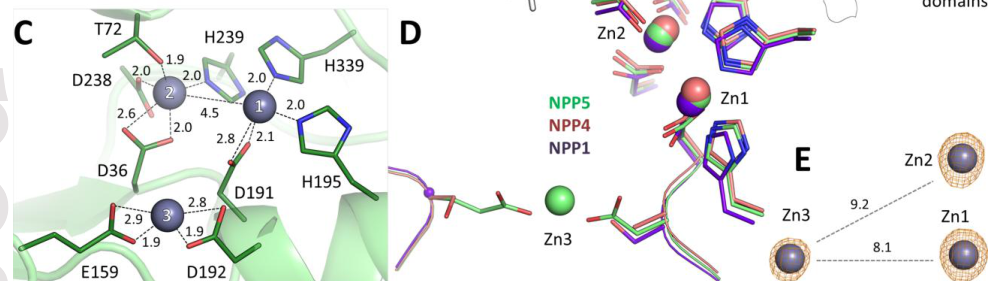

Ectonucleotide pyrophosphatase/phosphodiesterase family member 5 (NPP5), the least characterized ENPP family member. Single-pass type I transmembrane ectoenzyme with an N-terminal signal peptide and a C-terminal transmembrane helix; the extracellular catalytic PDE domain belongs to the alkaline phosphatase superfamily and uses a binuclear Zn2+ center for catalysis, with an ENPP5-specific third Zn2+ (Zn3) coordinated by Glu159 and Asp192 near the active site contacting ribose 2'/3' oxygens. Unlike other ENPPs, wild-type human ENPP5 has minimal/undetectable activity toward canonical nucleotides such as ATP, ADP, and UTP; substrate access is restricted by a Tyr73 gatekeeper residue in the nucleotide-binding slot (where most ENPPs have Phe), and a Y73F mutant restores nucleotide hydrolysis. The strongest in-vitro activity is on nicotinamide adenine dinucleotide (NAD+); ENPP5 also cleaves ADP-ribose (ADPR) and UDP-glucose (UDPG), but catalytic efficiency for NAD+ is very low (KM > 1 mM; kcat/KM ~0.00067 s-1 uM-1), implying any physiological role likely occurs in niches with locally elevated substrate (e.g., restricted extracellular microenvironments such as synaptic clefts). A role in NAD-based neurotransmission has been hypothesized but awaits genetic validation in knockout models. Crystal structures of human and murine NPP5 ectodomains are available (PDB 5VEM, 5VEN, 5VEO). ENPP5 has been reported as a plasma biomarker associated with frailty and as a candidate factor in dermal fibroblast senescence, though these associations remain correlative.
| GO Term | Evidence | Action | Reason |
|---|---|---|---|
|
GO:0016787
hydrolase activity
|
IBA
GO_REF:0000033 |
ACCEPT |
Summary: Hydrolase activity - phosphodiesterase/pyrophosphatase.
Reason: General enzyme class supported by family membership and direct biochemical assays.
Supporting Evidence:
file:human/ENPP5/ENPP5-deep-research-perplexity.md
See deep research file for comprehensive analysis
file:human/ENPP5/ENPP5-deep-research-falcon.md
ENPP5 is best annotated as a cell-surface, Zn-dependent ecto-phosphodiesterase/pyrophosphatase with narrow substrate selectivity, showing strongest activity toward NAD (and detectable activity toward ADPR and UDPG) under in vitro conditions.
|
|
GO:0005576
extracellular region
|
IEA
GO_REF:0000044 |
ACCEPT |
Summary: Extracellular region - extracellular catalytic domain.
Reason: Enzyme active site.
Supporting Evidence:
file:human/ENPP5/ENPP5-deep-research-falcon.md
Human ENPP5 is described as an extracellular, membrane-anchored ectoenzyme with type I transmembrane topology.
|
|
GO:0016020
membrane
|
IEA
GO_REF:0000044 |
ACCEPT |
Summary: Membrane - membrane protein.
Reason: General membrane.
|
|
GO:0016787
hydrolase activity
|
IEA
GO_REF:0000043 |
ACCEPT |
Summary: Hydrolase activity - phosphodiesterase.
Reason: General enzyme class.
|
|
GO:0046872
metal ion binding
|
IEA
GO_REF:0000043 |
ACCEPT |
Summary: Metal ion binding - requires metal cofactors.
Reason: Enzymatic requirement.
|
|
GO:0005886
plasma membrane
|
IEA
GO_REF:0000107 |
ACCEPT |
Summary: Plasma membrane - single-pass type I transmembrane protein.
Reason: Core localization.
Supporting Evidence:
PMID:34958798
ENPP4, ENPP5, and ENPP7 are single-pass type I membrane proteins, while ENPP6 is GPI-anchored to the plasma membrane (11).
|
|
GO:0007154
cell communication
|
IEA
GO_REF:0000107 |
MARK AS OVER ANNOTATED |
Summary: Cell communication - very general term. The earlier rationale
(adenosine generation from AMP) is contradicted by direct biochemistry
(wild-type ENPP5 has minimal activity on ATP/ADP/UTP). The alternative
NAD-based neurotransmission hypothesis explicitly awaits KO-mouse
validation and provides no positive in-cell evidence. Per PR #687
review feedback, downgrading from KEEP_AS_NON_CORE to
MARK_AS_OVER_ANNOTATED since the original mechanism is invalidated
and the proposed replacement mechanism is too speculative to sustain
this broad annotation.
Reason: The adenosine-signaling rationale is contradicted by biochemistry, and
the NAD-neurotransmission hypothesis explicitly "awaits validation
using Enpp5 KO mice." GO:0007154 is among the broadest BP terms and
adds no annotation value when the supporting mechanism is unknown.
Supporting Evidence:
file:human/ENPP5/ENPP5-deep-research-falcon.md
Independent experimental work reports that wild-type human ENPP5 does not hydrolyze ATP, ADP, or UTP detectably in assays measuring phosphate release.
PMID:34958798
This suggests a role for ENPP5 in NAD-based neurotransmission, but this hypothesis awaits validation using Enpp5 KO mice.
|
|
GO:0008270
zinc ion binding
|
IEA
GO_REF:0000107 |
ACCEPT |
Summary: Zinc ion binding - requires metal cofactors for catalysis; ENPP5 uses the canonical binuclear Zn2+ catalytic center plus an ENPP5-specific third Zn2+ (Zn3) coordinated by Glu159/Asp192.
Reason: Enzymatic requirement, supported by crystal structures.
Supporting Evidence:
file:human/ENPP5/ENPP5-deep-research-falcon.md
ENPP5 contains the canonical binuclear zinc catalytic center plus an ENPP5-specific third Zn2+ (Zn3) near the active site.
|
|
GO:0000210
NAD+ diphosphatase activity
|
IDA
PMID:28898552 A key tyrosine substitution restricts nucleotide hydrolysis ... |
ACCEPT |
Summary: NAD+ diphosphatase activity - wild-type ENPP5 cleaves NAD+; this is the strongest in-vitro activity identified, though catalytic efficiency is low (KM > 1 mM).
Reason: Direct biochemical evidence; this is the best-supported molecular function for ENPP5.
Supporting Evidence:
PMID:28898552
Interestingly, NPP5 is able to cleave nicotinamide adenine dinucleotide (NAD), suggesting a potential role of this enzyme in NAD-based neurotransmission.
file:human/ENPP5/ENPP5-deep-research-falcon.md
ENPP5's highest catalytic rate was observed on NAD+/NADH, but the catalytic efficiency for NAD+ is very low (0.00067 s-1 uM-1).
|
|
GO:0005886
plasma membrane
|
ISS
GO_REF:0000024 |
ACCEPT |
Summary: Plasma membrane - single-pass type I transmembrane protein.
Reason: Core localization.
Supporting Evidence:
PMID:34958798
ENPP4, ENPP5, and ENPP7 are single-pass type I membrane proteins, while ENPP6 is GPI-anchored to the plasma membrane (11).
|
|
GO:0007154
cell communication
|
ISS
GO_REF:0000024 |
MARK AS OVER ANNOTATED |
Summary: Cell communication - very general term. Same reasoning as the IEA
cell-communication annotation above. Downgraded from KEEP_AS_NON_CORE
to MARK_AS_OVER_ANNOTATED per PR #687 review feedback.
Reason: The adenosine-signaling rationale is contradicted by biochemistry, and
the NAD-neurotransmission hypothesis explicitly "awaits validation
using Enpp5 KO mice." This broad term adds no annotation value when
the supporting mechanism is unknown.
Supporting Evidence:
PMID:34958798
This suggests a role for ENPP5 in NAD-based neurotransmission, but this hypothesis awaits validation using Enpp5 KO mice.
|
|
GO:0008270
zinc ion binding
|
IDA
PMID:28898552 A key tyrosine substitution restricts nucleotide hydrolysis ... |
ACCEPT |
Summary: Zinc ion binding - ENPP5 contains a binuclear Zn2+ catalytic center plus an ENPP5-specific third Zn2+ near the active site.
Reason: Direct structural evidence (PDB 5VEM/5VEN/5VEO).
Supporting Evidence:
PMID:28898552
An NPP5-specific metal binding motif is found adjacent to the active site, although its significance is unclear.
file:human/ENPP5/ENPP5-deep-research-falcon.md
Structural work indicates ENPP5 contains the canonical binuclear zinc catalytic center plus an ENPP5-specific third Zn2+ (Zn3) near the active site.
|
|
GO:0019677
NAD+ catabolic process
|
NAS | NEW |
Summary: ENPP5 cleaves NAD+ in vitro (strongest known activity); hypothesized extracellular role in NAD-based neurotransmission.
Reason: Best-supported biological process for ENPP5; replaces previously proposed purine nucleotide catabolic process, which over-generalized activity that wild-type ENPP5 lacks on ATP/ADP/AMP.
Supporting Evidence:
PMID:28898552
Interestingly, NPP5 is able to cleave nicotinamide adenine dinucleotide (NAD), suggesting a potential role of this enzyme in NAD-based neurotransmission.
file:human/ENPP5/ENPP5-deep-research-falcon.md
The strongest experimental evidence indicates wild-type ENPP5 preferentially cleaves NAD and can also cleave ADP-ribose (ADPR) and UDP-glucose (UDPG), whereas it has minimal/undetectable activity on canonical nucleotide triphosphates/diphosphates under tested conditions.
|
The research report should be a detailed narrative explaining the function, biological processes, and localization of the gene product. Citations should be given for all claims.
You should prioritize authoritative reviews and primary scientific literature when conducting research. You can supplement
this with annotations you find in gene/protein databases, but these can be outdated or inaccurate.
We are specifically interested in the primary function of the gene - for enzymes, what reaction is catalyzed, and what is the substrate specificity? For transporters, what is the substrate? For structural proteins or adapters, what is the broader structural role? For signaling molecules, what is the role in the pathway.
We are interested in where in or outside the cell the gene product carries out its function.
We are also interested in the signaling or biochemical pathways in which the gene functions. We are less interested in broad pleiotropic effects, except where these elucidate the precise role.
Include evidence where possible. We are interested in both experimental evidence as well as inference from structure, evolution, or bioinformatic analysis. Precise studies should be prioritized over high-throughput, where available.
Scope and identity verification. This report concerns human ENPP5 (UniProt Q9UJA9), also called NPP5, an ectonucleotide pyrophosphatase/phosphodiesterase (ENPP) family member and “among the least characterized ENPP family members.” (gorelik2017akeytyrosine pages 1-4, borza2022structureandfunction pages 8-9). The functional inferences and evidence below are restricted to this target and to Homo sapiens unless explicitly stated.
The ENPP family (ENPP1–7) comprises ecto-enzymes within the alkaline phosphatase superfamily that participate in extracellular metabolism of nucleotide and lipid-like substrates, thereby shaping purinergic and related signaling. ENPP5 stands out because it shows little to no activity on many “typical” ENPP substrates and common nucleotides but has detectable activity on a more restricted set of sugar-containing nucleotides and NAD. (gorelik2017akeytyrosine pages 1-4, gorelik2017akeytyrosine pages 4-7, borza2022structureandfunction pages 8-9).
A recent authoritative review (Journal of Biological Chemistry, 2022; Borza et al.) summarizes ENPP5 as showing “no activity toward many known ENPP substrates but, instead, cleaves nicotinamide adenine dinucleotide (NAD),” leading to a hypothesis that ENPP5 might participate in NAD-based neurotransmission, though this requires genetic validation (e.g., KO models). (borza2022structureandfunction pages 8-9).
Human ENPP5 is described as an extracellular, membrane-anchored ectoenzyme with type I transmembrane topology: an N-terminal signal peptide and a C-terminal transmembrane helix plus a short cytoplasmic tail. Recombinant constructs used for biochemical/structural work typically remove the membrane anchor (e.g., residues ~25–430) to produce soluble ectodomain protein. (gorelik2017akeytyrosine pages 1-4, gorelik2017akeytyrosine pages 7-10, gorelik2017akeytyrosine pages 4-7).
Implication: ENPP5’s enzymatic action is expected to occur at the cell surface / extracellular milieu, where it can modulate extracellular nucleotide-like metabolites in a local microenvironment (e.g., synaptic clefts). (gorelik2017akeytyrosine pages 7-10, gorelik2017akeytyrosine pages 4-7).
ENPP5 belongs to the ENPP subgroup within the alkaline phosphatase superfamily and uses Zn2+-dependent catalysis. Structural work indicates ENPP5 contains the canonical binuclear zinc catalytic center plus an ENPP5-specific third Zn2+ (Zn3) near the active site. This third Zn is coordinated by residues including Glu159 and Asp192, and is positioned to interact with the ribose 2′/3′ oxygens of substrates. (gorelik2017akeytyrosine pages 7-10, gorelik2017akeytyrosine pages 4-7, borza2022structureandfunction pages 7-8).
A key mechanistic conclusion is that ENPP5’s unusual substrate profile is strongly influenced by a residue in the nucleotide-binding slot: a Tyr in ENPP5 where other ENPPs often have Phe. (gorelik2017akeytyrosine pages 1-4, randriamihaja2017structuralanalysesofa pages 49-55, borza2022structureandfunction pages 7-8).
ENPP5 is characterized as an ecto-nucleotide pyrophosphatase/phosphodiesterase that can hydrolyze phosphodiester/pyrophosphate bonds in selected extracellular nucleotide-like substrates. The strongest experimental evidence indicates wild-type ENPP5 preferentially cleaves NAD and can also cleave ADP-ribose (ADPR) and UDP-glucose (UDPG), whereas it has minimal/undetectable activity on canonical nucleotide triphosphates/diphosphates under tested conditions. (gorelik2017akeytyrosine pages 4-7, borza2022structureandfunction pages 7-8, borza2022structureandfunction pages 8-9).
Independent experimental work reports that wild-type human ENPP5 does not hydrolyze ATP, ADP, or UTP detectably in assays measuring phosphate release (“close to 0 μM”), in stark contrast to ENPP3 activity on these nucleotides. (randriamihaja2017structuralanalysesofa pages 49-55, randriamihaja2017structuralanalysesof pages 49-55).
A detailed FEBS Journal paper (Gorelik et al., Sep 2017; https://doi.org/10.1111/febs.14266) reports that ENPP5 is inactive against several “typical” NPP substrates (e.g., p-nitrophenyl-TMP) and also does not cleave tested phospholipids/related compounds, but does cleave NAD and shows activity on certain sugar-containing/atypical nucleotide substrates. (gorelik2017akeytyrosine pages 1-4, gorelik2017akeytyrosine pages 4-7).
The same work provides biochemical context suggesting that although ENPP5 has higher activity on NAD than on other tested nucleotides, its affinity is low (KM > 1 mM), implying any physiological relevance would likely occur where local NAD could become transiently high (e.g., restricted extracellular microenvironments), rather than in plasma. (gorelik2017akeytyrosine pages 7-10).
A high-level quantitative summary in the JBC 2022 ENPP review reports that ENPP5’s highest catalytic rate was observed on NAD+/NADH, but the catalytic efficiency for NAD+ is very low (0.00067 s−1 μM−1). (borza2022structureandfunction pages 7-8).
Two complementary studies converge on a key structural determinant:
This is a strong mechanistic anchor for functional annotation: ENPP5 is not a general ATPase like ENPP1/ENPP3; instead, its substrate range is constrained by a specific “gatekeeper” residue in the nucleobase binding region. (gorelik2017akeytyrosine pages 4-7, borza2022structureandfunction pages 7-8).
Because ENPP5 is membrane-anchored with an extracellular catalytic ectodomain, its expected role is in extracellular nucleotide/NAD metabolite processing. (gorelik2017akeytyrosine pages 1-4, gorelik2017akeytyrosine pages 4-7).
A practical enabling resource for localization/expression studies is the production of antibodies recognizing native conformations of purinergic signaling components, including ENPP5; these reagents were developed to monitor cell surface expression of ENPP family proteins in native conformation. (randriamihaja2017structuralanalysesof pages 49-55).
The ENPP family is part of the extracellular nucleotide metabolism machinery that modulates purinergic signaling. ENPP5 has been proposed (based on its NAD-cleaving activity) to potentially contribute to NAD-based neurotransmission, but this remains a hypothesis in need of in vivo genetic validation (e.g., Enpp5 knockout studies). (borza2022structureandfunction pages 8-9).
Gorelik et al. report high-resolution structures of ENPP5 (murine and human) and provide PDB identifiers: 5VEM, 5VEN, 5VEO. (gorelik2017akeytyrosine pages 1-4).
Key structural features relevant to function include:
The FEBS Journal study includes figures that directly depict (i) ENPP5 active site Zn organization (including Zn3), (ii) Tyr73 positioning, and (iii) relative enzymatic activity on substrates including NAD versus others and wild-type versus Y73F mutant. (gorelik2017akeytyrosine media 261ec884, gorelik2017akeytyrosine media 7d676195, gorelik2017akeytyrosine media 4e0a41b5).
ENPP5 remains relatively under-characterized mechanistically, so much of the 2023–2024 literature is review-level or omics/correlation-level, rather than direct enzymology.
A 2024 review on aging, senescence, and skin wound healing states that ENPP5 was reported as a “key factor” in senescence in dermal fibroblasts and that knockdown of ENPP5 retarded senescence via modulation of apoptosis-inducing proteins. (o’reilly2024agingsenescenceand pages 6-7). This is suggestive but not yet definitive for biochemical function; it motivates targeted mechanistic studies linking ENPP5 catalytic activity (or non-catalytic roles) to senescence pathways.
A large plasma proteomics study of frailty (Aging Cell, Aug 2020; https://doi.org/10.1111/acel.13193) reports ENPP5 (Q9UJA9) as negatively associated with frailty with estimate −0.0713, SE 0.0102, p = 6.83×10−12 (among many proteins tested). (sathyan2020plasmaproteomicprofile pages 5-7). This supports ENPP5’s detectability in plasma proteomic platforms and suggests utility in biomarker modeling, though it does not resolve mechanism.
A 2024 Research Square preprint on soluble biomarkers in long COVID is present in the retrieved corpus; however, the excerpt retrieved here does not include the specific ENPP5 statistics beyond bibliographic/context pages. Thus, ENPP5’s role there cannot be quantified from the available extracted text in this run. (buggert2024identificationofsoluble pages 20-23).
An in-silico ADC target study (PLOS ONE, Aug 26 2024; https://doi.org/10.1371/journal.pone.0308604) is present in the retrieved set, but the excerpt available here does not include ENPP5-specific validation details. Therefore, ENPP5 should be considered a hypothesis-level candidate in that context based on this run’s evidence. (kathad2024expandingtherepertoire pages 14-16).
Open Targets lists low-evidence disease associations for ENPP5 (each with 3 evidence items in the retrieved snapshot), including infectious disease / severe acute respiratory syndrome, neurodegenerative disease, ptosis, and color vision disorder. These should be treated as hypothesis-generating and require direct confirmation in primary experimental studies. (OpenTargets Search: -ENPP5).
Primary biochemical function supported by direct assays: ENPP5 is best annotated as a cell-surface, Zn-dependent ecto-phosphodiesterase/pyrophosphatase with narrow substrate selectivity, showing strongest activity toward NAD (and detectable activity toward ADPR and UDPG) under in vitro conditions. (gorelik2017akeytyrosine pages 4-7, borza2022structureandfunction pages 7-8).
Not a general extracellular ATPase: Multiple lines of evidence indicate wild-type human ENPP5 has minimal/undetectable activity on ATP/ADP/UTP; a single amino-acid swap (Y73F) is sufficient to re-enable canonical nucleotide hydrolysis, strongly implicating substrate-access restriction rather than loss of the catalytic machinery per se. (randriamihaja2017structuralanalysesofa pages 49-55).
Physiological role remains uncertain due to low catalytic efficiency: Even though NAD is a favored substrate in vitro, the combination of low affinity (KM > 1 mM) and low catalytic efficiency suggests ENPP5’s physiological impact may be limited to niches with unusually high local substrate availability or may involve additional, not-yet-tested substrates. (gorelik2017akeytyrosine pages 7-10, borza2022structureandfunction pages 7-8).
Disease/phenotype evidence is mainly correlative: Recent mentions in senescence/skin aging and in plasma proteomics are valuable for hypothesis generation and for application as measurable biomarkers, but they do not yet establish a causal ENPP5 mechanism in vivo. (o’reilly2024agingsenescenceand pages 6-7, sathyan2020plasmaproteomicprofile pages 5-7, OpenTargets Search: -ENPP5).
| Category | Key points | Best supporting citations (pqac IDs) | Key references with year + DOI URL |
|---|---|---|---|
| Identity/Family | Human ENPP5 corresponds to UniProt Q9UJA9, an ectonucleotide pyrophosphatase/phosphodiesterase family member (NPP5), and is described as among the least characterized ENPP family members. Comparative family reviews place ENPP5 within the extracellular nucleotide-metabolizing ENPP clade and distinguish it from better-characterized ENPP1/2/3/6/7. | (gorelik2017akeytyrosine pages 1-4, borza2022structureandfunction pages 7-8, borza2022structureandfunction pages 8-9) | Gorelik et al., 2017, FEBS J. https://doi.org/10.1111/febs.14266 ; Borza et al., 2022, J Biol Chem. https://doi.org/10.1016/j.jbc.2021.101526 |
| Topology & localization | ENPP5 is a type I transmembrane ectoenzyme with an N-terminal signal peptide and a C-terminal transmembrane helix plus short cytoplasmic tail; soluble crystallographic constructs used residues 25–430 after removing the membrane/cytoplasmic region. Reviews and primary structural work describe it as extracellular/membrane-anchored. | (gorelik2017akeytyrosine pages 1-4, gorelik2017akeytyrosine pages 7-10, gorelik2017akeytyrosine pages 4-7, randriamihaja2017structuralanalysesof pages 40-49, randriamihaja2017structuralanalysesofa pages 40-49) | Gorelik et al., 2017, FEBS J. https://doi.org/10.1111/febs.14266 ; Randriamihaja, 2017 structural thesis/article (journal unavailable in retrieved record) |
| Catalytic mechanism/cofactors | ENPP5 has the ENPP alkaline-phosphatase-like catalytic core with the usual binuclear Zn2+ catalytic center and a reported third ENPP5-specific Zn2+ (Zn3) near the active site. Zn3 is coordinated by Glu159 and Asp192 and can contact ribose 2'/3' oxygens; mutation E159S reportedly did not change ADP or NAD hydrolysis rates, so Zn3 may aid recognition rather than being essential for catalysis. Catalytic nucleophile is Thr72/Thr75 numbering depending on construct/species context. | (gorelik2017akeytyrosine pages 7-10, gorelik2017akeytyrosine pages 4-7, borza2022structureandfunction pages 7-8, gorelik2017akeytyrosine media 261ec884) | Gorelik et al., 2017, FEBS J. https://doi.org/10.1111/febs.14266 ; Borza et al., 2022, J Biol Chem. https://doi.org/10.1016/j.jbc.2021.101526 |
| Substrate specificity & kinetics | Wild-type ENPP5 shows minimal/undetectable activity toward many standard ENPP substrates and common nucleotides including ATP, ADP, UTP, and is also reported inactive on p-nitrophenyl-TMP, lysophosphatidylcholine, and glycerophosphocholine. In contrast, wild-type ENPP5 hydrolyzes NAD+ (highest activity among tested substrates) and also cleaves ADP-ribose (ADPR) and UDP-glucose (UDPG). Reported KM for NAD+ is >1 mM and catalytic efficiency for NAD+ is 0.00067 s−1 μM−1, indicating very low efficiency. | (gorelik2017akeytyrosine pages 7-10, gorelik2017akeytyrosine pages 4-7, randriamihaja2017structuralanalysesof pages 49-55, borza2022structureandfunction pages 7-8) | Gorelik et al., 2017, FEBS J. https://doi.org/10.1111/febs.14266 ; Borza et al., 2022, J Biol Chem. https://doi.org/10.1016/j.jbc.2021.101526 |
| Key residues/structure | A distinctive Tyr73 occupies the nucleotide-binding slot where other ENPPs commonly have Phe. Structural/functional studies indicate Tyr73 sterically restricts nucleotide binding/hydrolysis; Y73F restores activity toward ATP/ADP/UDP and broader NTP/NDP hydrolysis. ENPP5 structures reported for human/mouse include PDB 5VEM, 5VEN, 5VEO. Mutation of catalytic Thr75 to Ala caused precipitation/failure to crystallize, suggesting an important role in folding/stability. | (gorelik2017akeytyrosine pages 1-4, gorelik2017akeytyrosine pages 7-10, randriamihaja2017structuralanalysesofa pages 49-55, gorelik2017akeytyrosine pages 4-7, gorelik2017akeytyrosine media 261ec884) | Gorelik et al., 2017, FEBS J. https://doi.org/10.1111/febs.14266 ; Borza et al., 2022, J Biol Chem. https://doi.org/10.1016/j.jbc.2021.101526 |
| Pathway context | ENPP5 is discussed in the context of extracellular nucleotide metabolism/purinergic signaling. Because it can cleave NAD+, reviews propose a possible role in NAD-based neurotransmission, but this remains hypothetical and unvalidated; one structural study also notes possible roles in neural communication and purinergic pathways. | (borza2022structureandfunction pages 8-9, randriamihaja2017structuralanalysesofa pages 49-55, gorelik2017akeytyrosine pages 1-4) | Borza et al., 2022, J Biol Chem. https://doi.org/10.1016/j.jbc.2021.101526 ; Gorelik et al., 2017, FEBS J. https://doi.org/10.1111/febs.14266 |
| Disease/phenotype associations | Direct causal disease biology for ENPP5 is weakly established in the retrieved evidence. Open Targets lists low-confidence associations to infectious disease, neurodegenerative disease, ptosis, color vision disorder, and severe acute respiratory syndrome, each supported by only 3 evidence items in the retrieved context, so these should be treated as hypothesis-generating rather than confirmed. In plasma proteomics of frailty, ENPP5 was negatively associated with frailty with estimate −0.0713, SE 0.0102, p = 6.83E−12. | (OpenTargets Search: -ENPP5, sathyan2020plasmaproteomicprofile pages 5-7) | Open Targets context (retrieved association summary) ; Sathyan et al., 2020, Aging Cell. https://doi.org/10.1111/acel.13193 |
| Recent 2023-2024 findings | Recent literature remains mostly indirect/omics/review-level rather than mechanistic. A 2024 review on skin aging/wound healing states ENPP5 was reported as a key factor in senescence in dermal fibroblasts, and knockdown retarded senescence. A 2024 obesity/mouse study states ENPP5 was downregulated after PKCδ inhibitor treatment and refers to ENPP5 as a biomarker related to insulin resistance. A 2024 long-COVID preprint identifies ENPP5 among proteins negatively correlated with symptom-associated signatures. A 2024 in silico ADC-target study lists ENPP5 as a potential ADC target, but without experimental validation in the retrieved excerpt. | (o’reilly2024agingsenescenceand pages 6-7, osborne2024smallmoleculeinhibitor pages 13-16, buggert2024identificationofsoluble pages 20-23, kathad2024expandingtherepertoire pages 14-16) | O’Reilly et al., 2024, Front Immunol. https://doi.org/10.3389/fimmu.2024.1429716 ; Osborne et al., 2024, Biology. https://doi.org/10.3390/biology13110943 ; Buggert et al., 2024 preprint. https://doi.org/10.21203/rs.3.rs-4466781/v1 ; Kathad et al., 2024, PLOS ONE. https://doi.org/10.1371/journal.pone.0308604 |
| Applications/implementations | Current real-world use is mainly as a measurable protein/analyte rather than a validated therapeutic target. ENPP5 appears in plasma proteomic biomarker panels (frailty; long COVID), and antibodies recognizing ENPP5 in native conformation have been generated for monitoring cell-surface expression in research settings. Structural data and restored activity in Y73F suggest possible utility for enzyme engineering/substrate-discovery studies. | (sathyan2020plasmaproteomicprofile pages 5-7, buggert2024identificationofsoluble pages 20-23, gorelik2017akeytyrosine pages 1-4) | Sathyan et al., 2020, Aging Cell. https://doi.org/10.1111/acel.13193 ; Möller et al., 2007, Purinergic Signalling. https://doi.org/10.1007/s11302-007-9084-9 ; Gorelik et al., 2017, FEBS J. https://doi.org/10.1111/febs.14266 |
| Evidence gaps | Major gaps remain: physiological substrate(s) are still uncertain; activity is only convincingly shown for a narrow set of substrates with very low NAD+ efficiency; localization is inferred from topology rather than extensive endogenous cell biology; disease links are largely correlative; and proposed roles in NAD neurotransmission, senescence, and metabolic disease lack strong genetic/biochemical validation in the retrieved evidence. Reviews explicitly note that ENPP5 is among the least characterized family members and that validation in KO models is needed. | (borza2022structureandfunction pages 7-8, borza2022structureandfunction pages 8-9, randriamihaja2017structuralanalysesof pages 49-55, randriamihaja2017structuralanalysesof pages 40-49) | Borza et al., 2022, J Biol Chem. https://doi.org/10.1016/j.jbc.2021.101526 ; Gorelik et al., 2017, FEBS J. https://doi.org/10.1111/febs.14266 ; Randriamihaja, 2017 structural thesis/article (journal unavailable in retrieved record) |
Table: This table consolidates the strongest retrieved evidence on human ENPP5/Q9UJA9, covering identity, localization, catalytic properties, structure, pathway context, disease links, and recent 2023-2024 findings. It is useful as a compact evidence map showing what is established versus what remains uncertain for functional annotation.
References
(gorelik2017akeytyrosine pages 1-4): Alexei Gorelik, Antsa Randriamihaja, Katalin Illes, and Bhushan Nagar. A key tyrosine substitution restricts nucleotide hydrolysis by the ectoenzyme
(borza2022structureandfunction pages 8-9): Razvan Borza, Fernando Salgado-Polo, Wouter H. Moolenaar, and Anastassis Perrakis. Structure and function of the ecto-nucleotide pyrophosphatase/phosphodiesterase (enpp) family: tidying up diversity. Feb 2022. URL: https://doi.org/10.1016/j.jbc.2021.101526, doi:10.1016/j.jbc.2021.101526. This article has 134 citations and is from a domain leading peer-reviewed journal.
(gorelik2017akeytyrosine pages 4-7): Alexei Gorelik, Antsa Randriamihaja, Katalin Illes, and Bhushan Nagar. A key tyrosine substitution restricts nucleotide hydrolysis by the ectoenzyme
(gorelik2017akeytyrosine pages 7-10): Alexei Gorelik, Antsa Randriamihaja, Katalin Illes, and Bhushan Nagar. A key tyrosine substitution restricts nucleotide hydrolysis by the ectoenzyme
(borza2022structureandfunction pages 7-8): Razvan Borza, Fernando Salgado-Polo, Wouter H. Moolenaar, and Anastassis Perrakis. Structure and function of the ecto-nucleotide pyrophosphatase/phosphodiesterase (enpp) family: tidying up diversity. Feb 2022. URL: https://doi.org/10.1016/j.jbc.2021.101526, doi:10.1016/j.jbc.2021.101526. This article has 134 citations and is from a domain leading peer-reviewed journal.
(randriamihaja2017structuralanalysesofa pages 49-55): A Randriamihaja. Structural analyses of the ecto-nucleotides pyrophosphatases/phosphodiesterases 3 and 5. Unknown journal, 2017.
(randriamihaja2017structuralanalysesof pages 49-55): A Randriamihaja. Structural analyses of the ecto-nucleotides pyrophosphatases/phosphodiesterases 3 and 5. Unknown journal, 2017.
(gorelik2017akeytyrosine media 261ec884): Alexei Gorelik, Antsa Randriamihaja, Katalin Illes, and Bhushan Nagar. A key tyrosine substitution restricts nucleotide hydrolysis by the ectoenzyme
(gorelik2017akeytyrosine media 7d676195): Alexei Gorelik, Antsa Randriamihaja, Katalin Illes, and Bhushan Nagar. A key tyrosine substitution restricts nucleotide hydrolysis by the ectoenzyme
(gorelik2017akeytyrosine media 4e0a41b5): Alexei Gorelik, Antsa Randriamihaja, Katalin Illes, and Bhushan Nagar. A key tyrosine substitution restricts nucleotide hydrolysis by the ectoenzyme
(o’reilly2024agingsenescenceand pages 6-7): Steven O’Reilly, Ewa Markiewicz, and Olusola C. Idowu. Aging, senescence, and cutaneous wound healing—a complex relationship. Frontiers in Immunology, Oct 2024. URL: https://doi.org/10.3389/fimmu.2024.1429716, doi:10.3389/fimmu.2024.1429716. This article has 41 citations and is from a peer-reviewed journal.
(sathyan2020plasmaproteomicprofile pages 5-7): Sanish Sathyan, Emmeline Ayers, Tina Gao, Sofiya Milman, Nir Barzilai, and Joe Verghese. Plasma proteomic profile of frailty. Aging Cell, Aug 2020. URL: https://doi.org/10.1111/acel.13193, doi:10.1111/acel.13193. This article has 55 citations and is from a domain leading peer-reviewed journal.
(buggert2024identificationofsoluble pages 20-23): Marcus Buggert, Yu Gao, Curtis Cai, Sarah Adamo, Elsa Biteus, Habiba Kamal, Lena Dager, Kelly Miners, Sian Llewellyn-Lacey, Kristin Ladell, Pragati Sabberwal, Kirsten Bentley, Jinghua Wu, Mily Akhirunnesa, Samantha Jones, Per Julin, Christer Lidman, Richard Stanton, Helen Davies, Soo Aleman, David Price, Paul Goepfert, Steven Deeks, and Michael Peluso. Identification of soluble biomarkers that associate with distinct manifestations of long covid. Unknown journal, Jun 2024. URL: https://doi.org/10.21203/rs.3.rs-4466781/v1, doi:10.21203/rs.3.rs-4466781/v1.
(kathad2024expandingtherepertoire pages 14-16): Umesh Kathad, Neha Biyani, Raniero L. Peru y Colón De Portugal, Jianli Zhou, Harry Kochat, and Kishor Bhatia. Expanding the repertoire of antibody drug conjugate (adc) targets with improved tumor selectivity and range of potent payloads through in-silico analysis. PLOS ONE, 19:e0308604, Aug 2024. URL: https://doi.org/10.1371/journal.pone.0308604, doi:10.1371/journal.pone.0308604. This article has 9 citations and is from a peer-reviewed journal.
(OpenTargets Search: -ENPP5): Open Targets Query (-ENPP5, 5 results). Buniello, A. et al. (2025). Open Targets Platform: facilitating therapeutic hypotheses building in drug discovery. Nucleic Acids Research.
(randriamihaja2017structuralanalysesof pages 40-49): A Randriamihaja. Structural analyses of the ecto-nucleotides pyrophosphatases/phosphodiesterases 3 and 5. Unknown journal, 2017.
(randriamihaja2017structuralanalysesofa pages 40-49): A Randriamihaja. Structural analyses of the ecto-nucleotides pyrophosphatases/phosphodiesterases 3 and 5. Unknown journal, 2017.
(osborne2024smallmoleculeinhibitor pages 13-16): Brenna Osborne, Rekha S. Patel, Meredith Krause-Hauch, Ashley Lui, Gitanjali Vidyarthi, and Niketa A. Patel. Small molecule inhibitor of protein kinase c deltai (pkcδi) decreases inflammatory pathways and gene expression and improves metabolic function in diet-induced obese mouse model. Biology, 13(11):943, Nov 2024. URL: https://doi.org/10.3390/biology13110943, doi:10.3390/biology13110943. This article has 4 citations.

ENPP5 (ectonucleotide pyrophosphatase/phosphodiesterase 5) is a human gene encoding a type I transmembrane glycoprotein that belongs to the ENPP family (www.ncbi.nlm.nih.gov). This family (ENPP1–7 in mammals) comprises enzymes that hydrolyze phosphodiester bonds in various substrates such as nucleotides and phospholipids (pmc.ncbi.nlm.nih.gov). ENPP5 (also known as NPP5) is often considered a “putative” enzyme because it shares conserved domains with other ENPPs but remained poorly characterized for years (pmc.ncbi.nlm.nih.gov). Like ENPP4 and ENPP7, ENPP5 is a single-pass type I membrane protein anchored at the cell surface (pmc.ncbi.nlm.nih.gov), meaning it has a large extracellular domain and a short cytosolic tail. Unlike ENPP1–3, which have additional regulatory domains (two N-terminal somatomedin B-like domains and a C-terminal nuclease-like domain), ENPP5’s simpler architecture consists primarily of the catalytic phosphodiesterase (PDE) domain (pmc.ncbi.nlm.nih.gov).
ENPP family members differ in substrate preference and biological role. ENPP5 is grouped with ENPP1, 3, and 4 as an enzyme that hydrolyzes nucleotide substrates, in contrast to ENPP2, 6, and 7 which evolved as phospholipases (lipid metabolizing enzymes) (pmc.ncbi.nlm.nih.gov). Early clues from rodent studies suggested ENPP5 might play a role in neuronal cell communication, hinting at a function in the nervous system (www.ncbi.nlm.nih.gov). However, ENPP5 has been among the least characterized ENPPs, and our current understanding of its function has only recently solidified (pmc.ncbi.nlm.nih.gov). Below, we detail the known biochemical activity, cellular localization, and biological processes involving ENPP5, incorporating the latest research findings (2023–2024) and expert analyses. Key experimental evidence and statistics are provided to support each aspect of ENPP5’s functional annotation.
ENPP5 is synthesized as a single-pass membrane protein with its N-terminal domain directed to the extracellular space (a hallmark of type I membrane proteins) (pmc.ncbi.nlm.nih.gov). The mature protein is glycosylated and anchored in the plasma membrane, positioning its catalytic domain outside the cell where it can act on extracellular substrates (www.genecards.org). Alternative splicing of ENPP5 mRNA gives rise to at least two transcript variants (www.ncbi.nlm.nih.gov), which may influence its localization or stability (for example, a shorter isoform could lack the transmembrane segment, potentially making a soluble enzyme, though this remains to be confirmed experimentally). UniProt annotations and gene ontology data consistently indicate ENPP5 is localized to the plasma membrane and extracellular region (www.genecards.org), in line with it functioning as an ecto-enzyme.
Structurally, ENPP5’s extracellular portion comprises the conserved PDE catalytic domain found in all ENPP family members (pmc.ncbi.nlm.nih.gov). Notably, ENPP5 lacks the N-terminal somatomedin B domains present in ENPP1–3 and also lacks the C-terminal nuclease-like domain, resulting in a somewhat smaller ectodomain focused on catalysis (pmc.ncbi.nlm.nih.gov). Despite this streamlined domain structure, recent structural analysis revealed unique features in ENPP5’s active site. It is the only ENPP family member that coordinates three Zn²⁺ ions in its catalytic center (most ENPPs use two Zn²⁺ for catalysis) (pmc.ncbi.nlm.nih.gov). This extra zinc ion in ENPP5, coordinated by Aspartate-192 and Glutamate-159, interacts with the 2′ and 3′ oxygen atoms of ribose moieties on substrates (pmc.ncbi.nlm.nih.gov). Additionally, ENPP5 uniquely contains a tyrosine (Tyr73) in its substrate-binding pocket where other ENPPs have a phenylalanine at the corresponding position (pmc.ncbi.nlm.nih.gov). This single amino acid difference is significant: the hydroxyl group of Tyr73 likely sterically or electrostatically clashes with bulky polyphosphate groups of common nucleotides. In fact, experimentally replacing Tyr73 with phenylalanine (as found in other ENPPs) “eliminates the hydroxyl group that would presumably clash with nucleotide substrates” and enables ENPP5 to hydrolyze nucleotide triphosphates (NTPs) like ATP (pmc.ncbi.nlm.nih.gov). These structural insights underscore that ENPP5’s active-site configuration is specialized and more restrictive than that of its relatives. It is a membrane-bound ectoenzyme whose structure is tuned to a specific subset of substrates, as discussed next.
ENPP5 is an ecto-phosphodiesterase, meaning it cleaves phosphodiester bonds in extracellular molecules. However, its substrate specificity is unusually narrow compared to other ENPP family enzymes. Biochemical assays have demonstrated that recombinant ENPP5 can hydrolyze NAD⁺ (nicotinamide adenine dinucleotide), but notably cannot hydrolyze standard nucleotide di- or triphosphates such as ADP or ATP (www.genecards.org). In other words, ENPP5 fails to break down the typical nucleotide substrates that enzymes like ENPP1 or ENPP3 readily hydrolyze (www.genecards.org). Consistent with this, ENPP5 also lacks lysophospholipase D activity, so it does not act on lipid substrates like lysophosphatidylcholine (the reaction catalyzed by ENPP2/autotaxin) (pmc.ncbi.nlm.nih.gov). These observations align with ENPP5’s unique active-site features (the Tyr73 gatekeeper and extra Zn²⁺) that prevent binding or efficient turnover of bulky polyphosphate-containing ligands (pmc.ncbi.nlm.nih.gov).
Instead, ENPP5 shows activity toward a small set of unusual nucleotide substrates. Besides NAD⁺, it can cleave ADP-ribose (ADPR) and UDP-glucose, both of which are molecules containing a single diphosphate linkage connecting two moieties (pmc.ncbi.nlm.nih.gov). These are structurally akin to NAD in that they have two linked portions but lack the triphosphate chain of ATP. ENPP5 exhibits the highest catalytic rate for NAD⁺ (and its reduced form NADH) compared to those other substrates (pmc.ncbi.nlm.nih.gov). However, its efficiency on NAD⁺ is still quite low – a 2017 enzymology study measured a catalytic efficiency (k_cat/K_m) of only about 6.7×10^-4 s^-1·μM^-1 for NAD⁺ (pmc.ncbi.nlm.nih.gov). This rate is orders of magnitude lower than the efficiencies of classical nucleotide hydrolases like ENPP1 on ATP. The low turnover number suggests ENPP5 is a rather slow enzyme, potentially functioning in a regulatory capacity (fine-tuning local signaling levels) rather than bulk turnover of metabolites (pmc.ncbi.nlm.nih.gov).
Importantly, when ENPP5 does act on NAD⁺, it performs a pyrophosphatase/phosphodiesterase reaction that cleaves NAD⁺ into two products: nicotinamide mononucleotide (NMN) and adenosine monophosphate (AMP) (pmc.ncbi.nlm.nih.gov) (pmc.ncbi.nlm.nih.gov). This reaction breaks the pyrophosphate bond that connects the two nucleotide components of NAD⁺. A clear demonstration of this comes from a TLC (thin-layer chromatography) analysis using a schistosome (parasitic worm) ortholog of ENPP5: the enzyme’s NAD⁺ cleavage yielded distinct NMN and AMP spots matching known standards (pmc.ncbi.nlm.nih.gov). Figure 3d of that study explicitly depicts NAD⁺ → NMN + AMP as the reaction catalyzed by ENPP5-type enzymes (pmc.ncbi.nlm.nih.gov) (pmc.ncbi.nlm.nih.gov). By removing NAD’s adenine-containing AMP portion from the nicotinamide mononucleotide portion, ENPP5 effectively destroys extracellular NAD signals and produces AMP. The liberated AMP can in turn be further metabolized by other ecto-enzymes (e.g. CD73 5′-nucleotidase) into adenosine, which has its own signaling roles in purinergic pathways. Thus, ENPP5’s enzymatic activity can be seen as modulating extracellular NAD and related metabolites, distinct from ATPases or classical phosphodiesterases that target cyclic nucleotides.
To summarize, ENPP5’s primary known function is enzymatic hydrolysis of NAD⁺ (and similar ADP-ribose-containing molecules) on the cell surface (pmc.ncbi.nlm.nih.gov). It does not degrade ATP, ADP, or cyclic nucleotides under normal conditions (www.genecards.org) (pmc.ncbi.nlm.nih.gov), due to structural constraints in its active site. This specificity sets ENPP5 apart within the ENPP family and suggests it has a specialized biological role related to NAD⁺ signaling or metabolism. The next section discusses what that role might be, based on current evidence.
Given its ability to hydrolyze extracellular NAD⁺, ENPP5 is thought to influence purinergic signaling pathways, particularly those involving NAD⁺ as an extracellular messenger. NAD⁺ has emerged in recent years as a signaling molecule that can act as a “danger signal” or neurotransmitter in certain contexts (pmc.ncbi.nlm.nih.gov). Under stress or inflammation, NAD⁺ can be released into the extracellular space where it affects immune cells and other cell types (pmc.ncbi.nlm.nih.gov). One well-documented pathway is NAD-induced cell death (NICD) in the immune system: extracellular NAD⁺ can be used as a substrate by the T cell surface enzyme ART2 (ADP-ribosyltransferase 2) to ADP-ribosylate the P2X7 purinergic receptor on T cells, triggering pore formation and apoptosis (pmc.ncbi.nlm.nih.gov). This mechanism preferentially affects certain T cell subsets (notably regulatory T cells) and is considered a regulatory process during inflammation (pmc.ncbi.nlm.nih.gov). By degrading NAD⁺ outside the cell, ENPP5 would remove the substrate required for this ART2/P2X7 pathway, thereby modulating immune responses. In other words, ENPP5 could act as a “checkpoint” that protects cells from NAD⁺-mediated overactivation or death. Indeed, studies on the schistosome parasite ENPP5 (SmNPP5) dramatically illustrate this concept: the parasite’s surface NPP5 enzyme cleaves NAD⁺ and prevents NAD-induced T cell apoptosis, helping the parasite evade the host immune system (pmc.ncbi.nlm.nih.gov) (pmc.ncbi.nlm.nih.gov). When SmNPP5 is experimentally knocked down in the parasite, the worms lose much of their ability to degrade NAD⁺ and can no longer protect T cells from NAD-triggered P2X7 activation (pmc.ncbi.nlm.nih.gov) (pmc.ncbi.nlm.nih.gov). This highlights a potential immunomodulatory role for NPP5 enzymes – by consuming extracellular NAD⁺, they prevent pro-apoptotic signaling in neighboring cells.
In humans, ENPP5 is hypothesized to perform a similar function in relevant tissues. Neuronal and glial cells in the brain, for example, may release NAD⁺ upon injury or during neurotransmission, and ENPP5 could regulate such signals. While direct in vivo evidence is still lacking, a comprehensive 2021 review noted that ENPP5’s NAD-hydrolyzing activity “suggests a role for ENPP5 in NAD-based neurotransmission,” though this awaits confirmation in ENPP5 knockout models (pmc.ncbi.nlm.nih.gov). The brain expression of ENPP5 (and its rodent analogs) lends some support to this idea: ENPP5 transcripts have been detected in the central nervous system, and the initial discovery in rat implicated it in neuronal communication (www.ncbi.nlm.nih.gov). By degrading NAD⁺ near synapses or in the extracellular space, ENPP5 could influence purinergic neurotransmitter receptors (some P2Y/P2X receptors or other NAD-sensitive pathways) and thereby modulate neuronal excitability or neuroinflammation. This proposed role is analogous to the immune scenario – controlling the availability of NAD⁺ to receptors/enzymes that respond to it – but in the context of neural circuits.
Another potential pathway involves ectoenzyme cascades: ENPP5’s product AMP can be converted to adenosine, which activates P1 adenosine receptors on cells and generally exerts anti-inflammatory and tissue-protective effects. So ENPP5, by generating AMP (and subsequently adenosine), might indirectly promote adenosine-mediated signaling. This could have significance in tissues like the thyroid and testis, where ENPP5 is notably expressed at higher levels (www.ncbi.nlm.nih.gov). RNA profiling shows ENPP5 mRNA is enriched in the thyroid gland and in male reproductive tissues (testis/epididymis), among other tissues (www.ncbi.nlm.nih.gov). The functional significance in those contexts is not fully understood, but it may relate to local regulation of extracellular nucleotides during hormone release or sperm development, for instance.
In summary, ENPP5 appears to function as a regulator of extracellular nucleotide signaling. Its biochemical activity (NAD⁺ → NMN + AMP) positions it to control the levels of NAD⁺ and ADP-ribose in the extracellular milieu, thereby modulating pathways like: (1) Purinergic receptor signaling (e.g., preventing excessive P2X7 activation on immune cells), (2) Cell death and survival signaling in contexts where NAD⁺ acts as a DAMP (damage-associated molecular pattern), and possibly (3) Neurotransmission processes that utilize nucleotide derivatives as messengers. These roles are still being elucidated, but recent research has begun to shed light on ENPP5’s importance in certain physiological and pathological states, as discussed below.
Although ENPP5 was historically understudied, recent developments (2023–2024) have linked this enzyme to significant biological phenomena, including cellular aging and cancer, and have even suggested practical clinical applications. One of the most striking new findings is ENPP5’s involvement in the senescence-associated secretory phenotype (SASP) and skin aging. In a June 2024 study published in Biogerontology, Takaya et al. identified ENPP5 as a factor upregulated in senescent human dermal fibroblasts (pubmed.ncbi.nlm.nih.gov). Senescent cells are known to secrete pro-inflammatory cytokines, proteases, and other factors (the SASP) that contribute to tissue aging. The researchers found that when ENPP5 expression was knocked down by siRNA in fibroblasts, SASP biomarkers and other aging-related factors were significantly reduced (pubmed.ncbi.nlm.nih.gov), suggesting that ENPP5 activity helps drive the senescent phenotype. Conversely, treating fibroblasts with recombinant ENPP5 protein or overexpressing ENPP5 caused an increase in SASP factors and accelerated cellular senescence (pubmed.ncbi.nlm.nih.gov). These in vitro results indicate that ENPP5’s enzymatic action in the extracellular space (likely its NAD⁺-degrading activity, though the study did not explicitly detail the mechanism) promotes the pro-inflammatory, tissue-degrading milieu associated with aging cells.
Crucially, the same study provided in vivo evidence: mice treated with ENPP5 knockdown (via a topical siRNA approach to the skin) showed attenuated skin aging signs (pubmed.ncbi.nlm.nih.gov). The aged mice with reduced ENPP5 had less thinning of the dermal collagen layer, retained more subcutaneous fat, and had a thicker panniculus carnosus (a muscle layer) compared to controls (pubmed.ncbi.nlm.nih.gov). These are hallmarks of more youthful skin. This finding suggests that ENPP5 is not merely a bystander in aging, but indeed a causal SASP factor: by regulating extracellular nucleotides or related signals, ENPP5 influences the chronic inflammation and matrix degradation that characterize aging tissue (pubmed.ncbi.nlm.nih.gov). The authors conclude that targeting ENPP5 could be a novel strategy to suppress SASP and prevent age-related tissue deterioration (pubmed.ncbi.nlm.nih.gov). In practical terms, ENPP5 might become a therapeutic target in anti-aging interventions – for example, small-molecule inhibitors of ENPP5 or topical treatments to reduce its activity could mitigate skin aging. While such therapies are not yet available, the identification of ENPP5 in this context is a significant development in our understanding of the biochemical underpinnings of aging.
Another area of emerging interest is cancer biology. A 2023 study in PLoS ONE by Lee et al. highlighted ENPP5 in the context of microRNA regulation and tumor progression. The researchers discovered that ENPP5 is a direct target of the tumor-suppressive microRNA miR-126, and that in certain cancers (notably breast cancer and canine mammary tumors, which were used as a comparative model), ENPP5 is upregulated when miR-126 is downregulated (pmc.ncbi.nlm.nih.gov) (pmc.ncbi.nlm.nih.gov). Mechanistically, they found that LINE-1 retrotransposon transcripts acting as competing endogenous RNAs can “sponge” miR-126, thereby freeing ENPP5 mRNA from miR-126–mediated suppression (pmc.ncbi.nlm.nih.gov). The result is an increase in ENPP5 expression in tumor cells. Clinically, this seems relevant: cancer patients with higher miR-126 (which would keep ENPP5 levels low) had better overall survival, whereas those with low miR-126 and presumably higher ENPP5 fared worse (pmc.ncbi.nlm.nih.gov). Moreover, experimentally introducing a miR-126 mimic into cells downregulated ENPP5, confirming the regulatory relationship (pmc.ncbi.nlm.nih.gov). Conversely, overexpressing a fragment of LINE-1 that contains miR-126 binding sites relieved this repression and boosted ENPP5 levels (pmc.ncbi.nlm.nih.gov). These findings point to ENPP5 as a pro-oncogenic factor when dysregulated: its overexpression (due to loss of miR-126 control) may confer advantages to tumor cells or the tumor microenvironment. One hypothesis is that tumor cells might exploit ENPP5’s NAD⁺-degrading activity to modulate immune surveillance – analogous to how the schistosome uses NPP5 to protect itself, a tumor might use ENPP5 to protect the cancer cells from NAD⁺-mediated immune cell attack or to alter inflammation in the tumor milieu. While this hypothesis needs further investigation, the identification of ENPP5 in a microRNA-regulated network adds to its functional significance and suggests that ENPP5 could be a potential marker or therapeutic target in oncology. It also exemplifies expert opinion that much of ENPP5’s impact may lie in subtle modulation of signaling rather than a dramatic enzymatic output, consistent with it being a low-efficiency enzyme (pmc.ncbi.nlm.nih.gov).
Beyond aging and cancer, ENPP5 has recently been examined in a clinical context for sepsis. Sepsis is an extreme inflammatory response to infection, and there is growing interest in biomarkers that can diagnose or predict sepsis outcomes. In 2025, Gao et al. performed a comprehensive bioinformatics analysis (integrating multiple patient gene expression datasets) and identified ENPP5 as a potential diagnostic biomarker for sepsis (pmc.ncbi.nlm.nih.gov). In their analysis, ENPP5 was one of seven “hub genes” differentially expressed in sepsis, and it had the highest importance in a diagnostic model (with the largest area under the ROC curve for distinguishing sepsis patients from controls) (pmc.ncbi.nlm.nih.gov). They also noted correlations between ENPP5 expression and immune cell infiltration: ENPP5 levels positively correlated with T cell abundance and negatively with mast cells in sepsis patients (pmc.ncbi.nlm.nih.gov). While this study did not delve into mechanism, the data suggest that ENPP5 expression changes in the immune system during sepsis and might reflect the body’s attempt to regulate extracellular NAD⁺/nucleotide levels amid the intense inflammation. If validated, ENPP5 could serve as a blood biomarker for early sepsis diagnosis or even as a therapeutic target to modulate the immune response in sepsis. This is a real-world application under exploration – using ENPP5 as a marker in clinical decision-making – although it’s still in the research phase.
Authoritative reviews and experts in the field underscore both the importance of ENPP5 and the gaps in our knowledge. In a 2021 J. Biol. Chem. review of ENPP family structure and function, Borza et al. describe ENPP5 as “among the least characterized” of the ENPP enzymes, highlighting that its biological role is inferred mainly from its substrate specificity and expression patterns rather than direct experimentation (pmc.ncbi.nlm.nih.gov). They note the intriguing possibility that ENPP5 specializes in NAD-based signaling in the nervous system, given its ability to hydrolyze NAD⁺ and some expression in brain tissues (pmc.ncbi.nlm.nih.gov). However, they also emphasize that in vivo studies (such as generating ENPP5-knockout mice) are needed to definitively pinpoint its physiological function (pmc.ncbi.nlm.nih.gov). This expert opinion aligns with the experimental findings cited above: while we know what ENPP5 can do biochemically, determining what it actually does in the human body is the next critical step.
From a biochemical standpoint, experts find ENPP5’s active-site composition and inefficiency thought-provoking. The presence of a third Zn²⁺ ion and the Tyr73 “brake” on activity suggest nature has deliberately tuned ENPP5 to be more selective and slower than its cousins (pmc.ncbi.nlm.nih.gov) (pmc.ncbi.nlm.nih.gov). Some hypothesize that ENPP5 might function in specialized microenvironments – for example, in synaptic clefts, junctional spaces, or confined extracellular niches – where NAD⁺ or ADPR is released at low levels and needs tight regulation. In such locales, a high-activity enzyme could deplete signals too quickly or nonspecifically, whereas ENPP5’s low catalytic efficiency might allow for a more graded, homeostatic control of nucleotide signaling (pmc.ncbi.nlm.nih.gov). This idea is consistent with ENPP5 acting in processes like fine-tuning neurotransmitter pools or maintaining immune tolerance (by preventing excessive NAD⁺-P2X7 mediated cell death).
It is also worth noting that other ENPP family members have well-defined roles in human disease (for instance, ENPP1 in bone mineralization and pathological calcification, ENPP2 in cancer metastasis and fibrosis via LPA production, ENPP7 in gut lipid metabolism). The emerging links of ENPP5 to skin aging and cancer suggest that it too could play a significant role in human health and disease, even if subtler. Some dermatology researchers, for example, now consider ENPP5 a candidate SASP factor to target for anti-aging skin treatments (pubmed.ncbi.nlm.nih.gov). In oncology, the connection to miR-126 places ENPP5 in a network of tumor suppression and oncogenesis, implying it might be part of the “dark matter” of cancer genomics that wasn’t previously appreciated (pmc.ncbi.nlm.nih.gov) (pmc.ncbi.nlm.nih.gov).
Finally, future directions pointed out by experts include: validating ENPP5’s function through genetic models (knockout or overexpressing animals), identifying the cells and conditions where ENPP5 is most active (e.g. during neuroinflammation, in senescent cells, etc.), and exploring whether any endogenous inhibitors or modulators of ENPP5 exist. With new tools like high-specificity antibodies and small-molecule inhibitors being developed for other ENPPs, similar tools could be applied to ENPP5 to probe its role in vivo. There is also interest in the structural biology of ENPP5 – for instance, determining a high-resolution crystal structure or cryo-EM structure (to complement the AlphaFold models (pmc.ncbi.nlm.nih.gov)) could reveal how exactly its Tyr73 and third zinc confer its unique properties. Such structural insights might even enable structure-guided drug design if ENPP5 becomes a therapeutic target in conditions like fibrosis, neurodegeneration, or immunological disorders.
In summary, ENPP5 (Q9UJA9) encodes an enzyme that is distinct within the ectonucleotide pyrophosphatase/phosphodiesterase family. Its main biochemical function is the hydrolysis of NAD⁺ and related molecules in the extracellular space, yielding NMN and AMP and thereby modulating purinergic signaling pathways (pmc.ncbi.nlm.nih.gov) (pmc.ncbi.nlm.nih.gov). ENPP5 is a membrane-bound ectoenzyme, predominantly localized to the cell surface where it can intercept extracellular nucleotides (www.genecards.org). Structurally, it features a unique active-site architecture (including three Zn²⁺ ions and a tyrosine residue in the binding pocket) that explains its narrow substrate specificity and inability to process common nucleotides like ATP (pmc.ncbi.nlm.nih.gov). Biologically, ENPP5 is implicated in regulating cell–cell communication: it likely contributes to neuronal communication (by shaping NAD⁺-mediated neurotransmission) and to immune regulation (by limiting NAD⁺-triggered cell death and possibly influencing inflammation) (pmc.ncbi.nlm.nih.gov) (pmc.ncbi.nlm.nih.gov). Recent research breakthroughs have illuminated ENPP5’s role in driving the senescence secretory phenotype in aging cells (pubmed.ncbi.nlm.nih.gov) and its potential oncogenic upregulation when microRNA control is lost (pmc.ncbi.nlm.nih.gov), underscoring the enzyme’s relevance to human health. ENPP5 has even emerged as a candidate diagnostic marker in diseases like sepsis (pmc.ncbi.nlm.nih.gov).
Despite these advances, ENPP5 remains somewhat enigmatic. It stands out as an enzyme that is highly selective and relatively slow, hinting that its physiological roles might be subtler than those of other nucleotide-metabolizing enzymes. As expert analyses highlight, many questions about ENPP5 persist – for example, which physiological signals induce NAD⁺ release for ENPP5 to act on, which cell types primarily express ENPP5 in vivo, and how its activity is regulated under normal vs. pathological conditions (pmc.ncbi.nlm.nih.gov). Ongoing and future studies, including targeted knockouts and specific inhibitors, will help answer these questions. What is clear now is that ENPP5 is not a redundant “orphan” enzyme; rather, it fulfills a niche in the intricate network of extracellular signaling by controlling NAD⁺ and related metabolites. As such, ENPP5 adds a unique piece to the puzzle of how cells communicate and maintain homeostasis via extracellular nucleotides. Continuing to unravel ENPP5’s function will enhance our understanding of purinergic signaling in the nervous and immune systems and could pave the way for novel therapeutic approaches in aging, immunology, and beyond.
References: Recent key sources include a 2021 JBC review detailing ENPP5’s structure-function characteristics (pmc.ncbi.nlm.nih.gov) (pmc.ncbi.nlm.nih.gov), a 2024 Biogerontology study on ENPP5 in skin aging (pubmed.ncbi.nlm.nih.gov) (pubmed.ncbi.nlm.nih.gov), a 2023 PLoS ONE report linking ENPP5 to miR-126 in cancer (pmc.ncbi.nlm.nih.gov) (pmc.ncbi.nlm.nih.gov), and a 2025 BMC Infectious Diseases analysis identifying ENPP5 as a sepsis biomarker (pmc.ncbi.nlm.nih.gov). These, along with foundational enzymology research (pmc.ncbi.nlm.nih.gov) (pmc.ncbi.nlm.nih.gov) and database annotations (www.ncbi.nlm.nih.gov) (www.genecards.org), form the basis of the above comprehensive ENPP5 annotation.
The ENPP5 gene (Ectonucleotide Pyrophosphatase/Phosphodiesterase Family Member 5), located on chromosome 6 and encoding the protein product Q9UJA9, represents a specialized member of the ectonucleotide pyrophosphatase/phosphodiesterase (ENPP) family that has emerged as a multifunctional extracellular enzyme with distinct biochemical properties differentiating it from its family members[1][2]. Recent structural and functional studies have revealed that ENPP5 functions primarily as a NAD+-specific hydrolase with a uniquely restricted substrate specificity profile compared to other ENPP family members, possessing catalytic characteristics that suggest specialized roles in NAD-dependent cellular signaling and metabolic processes[2][5]. While initially characterized through studies in rat models suggesting involvement in neuronal cell communications[1][13], contemporary research has expanded our understanding of ENPP5's biological significance, demonstrating its participation in cellular senescence, aging processes, immune regulation, and potentially serving as a diagnostic biomarker for sepsis[39][51]. This report synthesizes current knowledge regarding ENPP5's molecular architecture, enzymatic properties, subcellular localization, catalytic mechanisms, and biological functions, emphasizing recent discoveries that have substantially refined our understanding of this enzyme's specific role within extracellular signaling networks.
ENPP5 is encoded by a protein-coding gene located at chromosome 6 with the official HGNC designation 13717 and NCBI Gene identifier 59084[1][28]. The gene produces a type-I transmembrane glycoprotein that has been annotated with nine transcript variants representing different splice isoforms[24]. The canonical protein product, represented by UniProtKB entry Q9UJA9, exists as a glycosylated transmembrane protein that undergoes N-glycosylation at asparagine residue 389, representing a post-translational modification that likely influences protein folding, stability, and functional properties[35]. This glycosylation modification places ENPP5 within the broader category of glycoproteins requiring proper folding within the endoplasmic reticulum and subsequent processing through the secretory pathway to achieve proper trafficking to the plasma membrane[32].
The protein exhibits high evolutionary conservation across vertebrate species, with the orthologous relationship extending to model organisms including mice, where it shares approximately 85% amino acid identity with the human form, and to zebrafish and other model systems[5][21]. This conservation pattern strongly suggests that the fundamental enzymatic function and biological role have been maintained throughout vertebrate evolution, indicating selective pressure preserving ENPP5's specific biochemical activities. The structural organization of ENPP5 places it within a distinct subgroup of the ENPP family, as members ENPP1 through ENPP7 exhibit markedly different domain architectures and functional specializations.
Unlike the multidomain architecture characteristic of ENPP1, ENPP2 (Autotaxin), and ENPP3, which contain two N-terminal somatomedin B-like domains (SMB1-2), followed by a phosphodiesterase (PDE) domain, a lasso loop, and a C-terminal nuclease-like domain, ENPP5 belongs to the simpler subfamily comprising ENPP4-7, which possess only the signature phosphodiesterase (PDE) domain as their defining catalytic module[2][31][50]. This domain simplification appears to correlate with the specialized substrate recognition properties that distinguish ENPP5 from its more structurally complex family members. ENPP5 functions as a single-pass type I membrane protein, meaning that its N-terminal region extends into the endoplasmic reticulum lumen during translocation, with the mature protein positioned such that the catalytic PDE domain faces the extracellular space, enabling direct access to extracellular substrates[2][31]. This type I topology contrasts with ENPP1 and ENPP3, which adopt type II membrane protein orientation, and differs from ENPP2 (Autotaxin), which is secreted as a soluble protein, and ENPP6, which is anchored to the plasma membrane via a glycosylphosphatidylinositol (GPI) anchor[2][31].
The designation as an "ecto-enzyme" reflects ENPP5's functional orientation, with its catalytic machinery positioned extracellularly to process nucleotides and nucleotide-derived molecules in the extracellular compartment rather than in the cytoplasm[2]. This ecto-enzymatic function fundamentally shapes ENPP5's role in cellular signaling, as it operates on substrates generated through vesicular release or released directly into the extracellular environment, positioning it as a regulator of extracellular purinergic signaling networks.
The most striking structural feature distinguishing ENPP5 from other ENPP family members involves its catalytic coordination of three zinc ions (Zn²⁺), rather than the two zinc ions present in the catalytic sites of ENPP1, ENPP3, ENPP4, ENPP6, and ENPP7[2][8][31]. This unique trimetal coordination geometry appears to represent a specialized adaptation for ENPP5's particular enzymatic function. Crystal structure analysis has revealed that the third zinc ion is coordinately bound by two metal-coordinating residues: aspartate 192 (Asp192) and glutamate 159 (Glu159)[2][8][31]. Rather than participating in the nucleotide-binding slot characteristic of other ENPPs, this third zinc ion interacts with the 2' and 3' oxygen atoms of the ribose moiety of nucleotide substrates[2][8][31]. This structural feature provides a metal-based recognition system specifically adapted for ribose-containing substrates, enabling ENPP5 to discriminate effectively among potential substrates based on their sugar chemistry and positioning.
The functional significance of this third zinc ion likely extends beyond simple substrate recognition, as the coordinated positioning of ribose oxygens at the metal center may facilitate proper substrate orientation for catalytic hydrolysis or alternatively may restrict substrate access, thereby providing a mechanistic basis for ENPP5's highly selective substrate utilization profile. The fact that this metal coordination feature is uniquely present in ENPP5 among all currently characterized ENPP family members strongly suggests that this structural innovation represents an important evolutionary specialization that enabled ENPP5 to occupy a distinct biochemical niche within extracellular nucleotide metabolism.
A second distinctive structural feature of ENPP5 directly accounts for its selective substrate specificity and represents a critical determinant of its functional properties. Whereas ENPP1, ENPP3, ENPP4, and other family members contain a phenylalanine residue (Phe) within their nucleotide-binding slot, ENPP5 uniquely possesses a tyrosine residue at position 73 (Tyr73) in this critical position[2][5][8][26][29]. This amino acid substitution proves functionally consequential because the hydroxyl (-OH) group on the tyrosine sidechain sterically clashes with nucleotide diphosphates (NDPs) and nucleotide triphosphates (NTPs), preventing efficient hydrolysis of these substrates[5][26][29]. This represents a remarkable evolutionary solution: ENPP5 has essentially "sacrificed" the ability to hydrolyze the canonical ATP, GTP, CTP, and UTP substrates that constitute the primary metabolic substrates for other ENPP family members, thereby specializing for alternative substrates not accommodated by the standard nucleotide-binding slot.
Experimental evidence supporting this mechanistic interpretation comes from targeted mutagenesis studies demonstrating that reversal of this Tyr73 substitution to phenylalanine (through Y73F mutation) eliminates the hydroxyl group that clashes with NTP substrates and consequently enables ENPP5 to acquire hydrolytic activity toward ATP and other NTPs, demonstrating that this single amino acid substitution is both necessary and sufficient to prevent NTP hydrolysis[5][26][29]. This finding establishes unequivocally that ENPP5's restricted substrate specificity represents an intentional evolutionary adaptation rather than a secondary consequence of other structural alterations. The catalytic site environment surrounding this key tyrosine substitution is notably negatively charged, similar to that of ENPP4, which may further influence substrate recognition and catalytic efficiency[2][8][31].
The enzymatic function of ENPP5 centers fundamentally on its ability to hydrolyze nicotinamide adenine dinucleotide (NAD⁺/NADH) with measurable catalytic efficiency[2][5][8][14][29]. Of the multiple potential substrates tested in biochemical assays, NAD⁺ achieves the highest catalytic rate for ENPP5-mediated hydrolysis[2][8][19][29]. However, important caveats accompany this finding: while NAD⁺ produces the highest turnover rate, the overall catalytic efficiency for NAD⁺ hydrolysis remains relatively low, measured at 0.00067 s⁻¹ μM⁻¹[2][8][31][50]. This low catalytic efficiency indicates that while ENPP5 can process NAD⁺, it does not do so with the high efficiency exhibited by other ENPP family members toward their preferred substrates (for comparison, ENPP1 exhibits catalytic efficiencies in the range of 0.017-0.34 s⁻¹ μM⁻¹ for various nucleotide substrates)[2][8].
This functional characteristic suggests that ENPP5 occupies an unusual niche within extracellular nucleotide metabolism—it functions as a NAD⁺-specific hydrolase rather than a general nucleotidase, and it does so with relatively modest catalytic parameters, possibly reflecting either evolutionary optimization for a specific physiological context where modest catalytic rates prove sufficient, or alternatively, constraint imposed by the requirement to maintain specificity through structural limitations that inherently reduce catalytic turnover rates.
Beyond NAD⁺, ENPP5 exhibits catalytic activity toward a limited set of additional substrates. Biochemical characterization has established that ENPP5 can cleave UDP-glucose (UDPG) and ADP-ribose (ADPR), though catalytic details for these substrates have not been extensively characterized[2][8][19][31]. Notably, the fact that ADP-ribose, which constitutes the monomeric unit of poly(ADP-ribose) modifications and represents a critical product of NAD⁺ metabolism through ADP-ribosylation reactions, appears as a substrate suggests possible functional integration of ENPP5 with NAD⁺-dependent post-translational modification pathways[2].
A fascinating aspect of ENPP5's substrate recognition involves evidence suggesting that substrate recognition does not proceed exclusively through the nucleotide-binding slot, at least under in vitro conditions[2][8][31][50]. Instead, mounting evidence suggests that substrate interaction involves other regions of the protein surface where the third zinc ion could potentially participate in substrate coordination and recognition[2][8][31]. This represents a departure from the canonical models of nucleotide recognition developed for ENPP1 and other family members, where well-defined nucleotide-binding slots with characteristic π-π stacking interactions between aromatic amino acids and nucleotide bases provide the primary substrate-binding interface. For ENPP5, the presence of the third metal coordination site adjacent to the catalytic center, combined with the unique steric constraints imposed by the Tyr73 substitution, may necessitate fundamentally different substrate approach pathways and binding geometries that remain to be fully elucidated.
When ENPP5 hydrolyzes its preferred substrates, the chemical reactions produce specific products dependent on substrate identity. For NAD⁺ hydrolysis, the reaction generates adenosine monophosphate (AMP) and a nicotinamide-ribose derivative bearing a diphosphate group, products similar to those generated by other NAD⁺-consuming enzymes such as sirtuins or PARPs, though with distinct mechanistic implications[2][8]. This product profile indicates that ENPP5 cleaves the N-glycosidic bond connecting the nicotinamide base to the ribose sugar of NAD⁺. The generation of AMP from NAD⁺ metabolism represents an important link to broader nucleotide signaling networks, as AMP itself serves as a substrate for additional ectonucleotidases (such as 5'-nucleotidases/CD73) that can convert it to adenosine, a signaling molecule with important immunoregulatory and neurological functions.
Like all members of the alkaline phosphatase superfamily to which ENPPs belong, ENPP5 catalyzes phosphodiester bond hydrolysis through a zinc-dependent nucleophilic substitution mechanism involving metal ion-mediated polarization of the phosphoester oxygen atoms[12]. The reaction proceeds through a phosphoryl transfer mechanism in which a threonine nucleophile (identified through site-directed mutagenesis in related ENPP family members) attacks the phosphorus center of the substrate phosphodiester bond[12]. Multiple mechanistic scenarios have been proposed for this reaction, ranging from fully synchronous SN2-like substitution to two-step mechanisms proceeding through either dissociative trigonal metaphosphate intermediates or associative pentavalent phosphorane intermediates[12].
The fundamental role of the zinc ions involves both stabilization of negative charge developing on the oxygen atoms of the phosphodiester group during bond breakage and stabilization of the developing nucleophile through polarization of water or amino acid nucleophiles positioned in the catalytic center[12]. The presence of three zinc ions in ENPP5, rather than the canonical two-zinc arrangement found in other phosphodiesterases, likely introduces additional layers of complexity into the catalytic mechanism, particularly regarding substrate positioning, transition state stabilization, and product release.
While detailed transition state analysis specific to ENPP5 has not been published, comparative structural studies of ENPP family members utilizing transition state analogs (such as orthovanadate complexes that adopt trigonal bipyramidal geometries mimicking phosphorus transition states) have provided important mechanistic insights applicable to understanding ENPP5's catalytic process[9]. These studies indicate that phosphate oxygen coordination geometry varies subtly among ENPP family members depending on active site architecture, suggesting that even modest structural differences in the catalytic site substantially influence the precise mechanism through which catalysis proceeds[9].
For ENPP5 specifically, the negatively charged catalytic site environment and the unique third zinc coordination site almost certainly confer distinctive transition state stabilization properties compared to other ENPPs, likely contributing to the selective substrate recognition and specificity that characterizes ENPP5's enzymatic function. The exact catalytic mechanism and the relative contribution of the third zinc ion to catalysis remain to be definitively resolved through structural studies utilizing transition state analogs or through mechanistic kinetic analysis[2][8][31].
ENPP5 functions as a plasma membrane-resident ecto-enzyme, positioned to encounter and process substrates generated or released into the extracellular compartment. The type I transmembrane topology, with N-terminal localization in the ER lumen during synthesis and subsequent maturation in the secretory pathway, results in positioning of ENPP5's catalytic domain in the extracellular space, with the catalytic activity directed toward extracellular substrates[2][31]. This ecto-enzymatic orientation places ENPP5 at the interface between intracellular and extracellular compartments, enabling it to respond to signals generated through cell lysis, vesicular release, or active secretion of nucleotides and nucleotide metabolites.
The glycosylation of ENPP5 at asparagine 389, occurring within the ER and being further processed within the Golgi apparatus during secretory transit, almost certainly influences protein folding, trafficking efficiency, and cellular localization[32][35]. N-glycosylation often modulates protein-protein interactions, stability, and potentially enzymatic activity through indirect effects on protein conformation. Expression pattern analysis indicates that ENPP5 transcripts are detected across diverse tissues including corpus epididymis, bronchial epithelial cells, seminal vesicles, and numerous other cell types and tissues[37], suggesting that ENPP5's enzymatic function operates across multiple physiological contexts rather than being restricted to specialized cell types.
While comprehensive subcellular localization mapping for ENPP5 remains incomplete in current literature, the established plasma membrane residence of this type I transmembrane protein means that its primary site of enzymatic function resides at the cell surface interface. The neuronal expression pattern suggested by early studies in rat brain tissue models[1][13] has been supported by more recent analysis indicating brain-enriched expression patterns within specific neuronal populations[16]. The broad tissue distribution detected in transcriptomic analyses suggests that ENPP5 participates in extracellular NAD⁺ metabolism and purinergic signaling across multiple tissues and cell types, not exclusively within the nervous system.
The capacity of ENPP5 to hydrolyze NAD⁺ integrates this enzyme into critical biochemical pathways centered on NAD⁺ metabolism, ADP-ribosylation reactions, and extracellular purinergic signaling[2][5][14][29]. NAD⁺ serves multiple fundamental functions in cellular physiology, functioning as an essential coenzyme for oxidation-reduction reactions within metabolic pathways, participating in post-translational modifications through ADP-ribosylation catalyzed by PARP enzymes and sirtuins, and serving as an extracellular signaling molecule that activates purinergic receptors on cells within the microenvironment[7][10]. ENPP5's ability to cleave NAD⁺ into AMP and a nicotinamide-ribose diphosphate derivative represents a mechanism through which extracellular NAD⁺ can be catabolized, potentially regulating NAD⁺ bioavailability and simultaneously generating downstream metabolites that themselves function as signaling molecules.
The connection between ENPP5-mediated NAD⁺ metabolism and ADP-ribosylation processes warrants particular emphasis, as NAD⁺ serves as the direct substrate for enzymes catalyzing ADP-ribosylation, including PARP family members and mono(ADP-ribosyl)transferases[7][10]. ENPP5 activity potentially influences the availability of NAD⁺ for these modification reactions, thereby indirectly regulating the extent of protein ADP-ribosylation occurring within cells. In neurodegenerative disease contexts, dysregulated ADP-ribosylation contributes to protein aggregation, neuroinflammation, and metabolic dysfunction[7], suggesting that ENPP5-regulated NAD⁺ availability could influence neurodegeneration-related processes through effects on PARP activity and protein ADP-ribosylation.
ENPP5 participates within the broader framework of extracellular nucleotide metabolism and purinergic signaling networks. ATP and other nucleotides released into the extracellular space activate P2 purinergic receptors (both ionotropic P2X and metabotropic P2Y subtypes), while adenosine generated through sequential ATP degradation activates P1 adenosine receptors[15][18]. Within neuroendocrine and neuronal systems, purinergic signaling modulates cell electrical activity, hormone secretion, neurotransmitter release, and neuronal development[15][18]. The ecto-enzymes collectively responsible for ATP degradation include both NTPDases (nucleoside triphosphate diphosphohydrolases) that generate AMP plus inorganic phosphate and ENPPs that generate AMP plus pyrophosphate[15][18][49]. The metabolic product AMP generated from ENPP5-mediated NAD⁺ hydrolysis feeds into these nucleotide-degrading pathways, ultimately contributing to adenosine generation and adenosine receptor activation.
This pathway integration suggests that ENPP5 acts as a metabolic hub linking NAD⁺ bioavailability, extracellular nucleotide metabolism, and purinergic receptor signaling. The specific contribution of ENPP5 versus other ecto-nucleotidases to ATP degradation and adenosine generation in any given tissue context likely depends on relative enzyme expression levels and subcellular localization patterns that remain to be comprehensively mapped.
A significant recent discovery has linked ENPP5 to cellular senescence and skin aging through its association with the senescence-associated secretory phenotype (SASP)[39][44][54][57]. Senescent cells accumulate with age and display characteristic phenotypes including cell cycle arrest, metabolic changes, and secretion of pro-inflammatory cytokines and extracellular matrix-degrading enzymes—the SASP—that contributes to age-related tissue pathology and dysfunction. A 2024 study published in Biogerontology demonstrated that ENPP5 is significantly expressed in replication-aged and DNA-damaged human skin fibroblasts[39][44][54][57]. Crucially, treatment with human recombinant ENPP5 protein and lentiviral overexpression of ENPP5 both promoted SASP and senescence in fibroblasts, whereas siRNA-mediated knockdown of ENPP5 suppressed SASP and reduced expression of skin aging-related factors[39][44][54][57].
In vivo validation using aged C57BL/6 mice demonstrated that ENPP5 knockdown in mouse skin ameliorated age-related reduction of subcutaneous adipose tissue, improved the appearance of the panniculus carnosus muscle layer, and reduced thinning of collagen fibers[39][44][54][57]. These findings suggest that ENPP5 functions as a pro-senescence, pro-aging factor whose downregulation or inhibition could potentially ameliorate age-related changes in skin structure and appearance. This discovery opens unexpected therapeutic avenues for anti-aging interventions targeting ENPP5 regulation or activity. The mechanistic basis through which ENPP5 promotes senescence and SASP remains to be elucidated but may involve effects on NAD⁺ bioavailability, metabolic reprogramming associated with senescence, or immunometabolic signaling within aging tissues.
The original characterization of ENPP5 in rat brain tissue suggested involvement in neuronal cell communications[1][13], and this theme has been reinforced by structural studies indicating ENPP5's potential role in NAD-based neurotransmission[5][14][29]. The discovery that ENPP5 preferentially hydrolyzes NAD⁺ rather than canonical ATP-derived nucleotides represents a remarkable evolutionary specialization that positions this enzyme to regulate extracellular NAD⁺ signaling in neural tissues. Within the nervous system, NAD⁺ serves multiple functions including participation in redox metabolism, DNA repair through PARP-mediated ADP-ribosylation, and potentially direct signaling through yet-uncharacterized NAD⁺-responsive receptors or metabolites.
The specific neuronal roles of ENPP5-regulated NAD⁺ metabolism remain incompletely understood, but several mechanistic possibilities merit consideration. First, ENPP5-mediated NAD⁺ hydrolysis could regulate the availability of NAD⁺ for PARP-catalyzed ADP-ribosylation, a modification increasingly recognized as critical for neuronal DNA repair, synaptic plasticity, and neuroinflammation[7]. Second, the AMP product generated from NAD⁺ hydrolysis could participate in adenosine-mediated signaling important for neuronal regulation. Third, the nicotinamide-ribose diphosphate coproduct itself might possess biological activity as a signaling molecule in neuronal tissues.
A very recent 2025 computational and bioinformatic study identified ENPP5 as a key gene exhibiting significant associations with immune cell infiltration and immune-related genes in sepsis[51]. Sepsis, characterized by dysregulated immune response to infection featuring excessive inflammation and immunosuppression, represents a major cause of mortality in critical illness. The study demonstrated through integrative multi-omics analysis that ENPP5 exhibited positive correlation with T cell infiltration and negative association with mast cell populations in sepsis patients across multiple independent datasets[51]. ENPP5 showed significant positive correlation with eight immune-related genes including CCL5 (chemokine ligand 5), GZMA (granzyme A), IFNG (interferon-gamma), PRF1 (perforin-1), and BTLA and BTN3A family members involved in T cell regulation[51].
These associations suggest that ENPP5 may function as a metabolic hub coordinating innate and adaptive immune responses during sepsis[51]. The mechanistic basis for ENPP5's role in immune regulation likely involves its extracellular NAD⁺ hydrolysis activity, as growing evidence implicates NAD⁺ availability in regulating immune cell development, function, and metabolic reprogramming. The emerging role of ENPP5 as a potential diagnostic biomarker and therapeutic target for sepsis-related immune dysregulation represents a novel clinical application for this enzyme and warrants further mechanistic investigation and clinical validation.
The recent recognition that ENPP5 substrates include not only NAD⁺ but also ADP-ribose, a key metabolite generated through NAD⁺-consuming ADP-ribosylation reactions catalyzed by PARP enzymes, connects ENPP5 to ADP-ribosylation metabolism[2][7][8]. ADP-ribosylation represents a reversible post-translational modification affecting protein function through mono(ADP-ribosyl)ation (MARylation) or poly(ADP-ribose) chain formation (PARylation)[7]. These modifications regulate diverse cellular processes including DNA repair, transcription, cell death, and immune responses[7]. ENPP1 has previously been identified as an enzyme capable of hydrolyzing ADP-ribose polymers, contributing to ADP-ribosylation reversal[7][10]. The fact that ENPP5 also demonstrates activity toward ADP-ribose substrates raises the possibility that ENPP5 participates in ADP-ribosylation metabolism through removal or modification of ADP-ribose structures, though the specific role and significance of this activity remains to be determined.
Understanding ENPP5's unique substrate specificity requires comparative structural analysis with other ENPP family members. ENPP1, the most thoroughly characterized family member, exhibits extraordinarily high specificity and affinity for ATP, with a Km of approximately 10-50 μM, and displays the highest catalytic efficiency for ATP among all ENPP family members[2][8]. The substrate-binding slot of ENPP1 contains well-characterized aromatic amino acids (Tyr340 and Phe257) that establish π-π stacking interactions with nucleotide bases, and a "lysine claw" composed of three positively charged lysine residues (Lys255, Lys278, and Lys528) that provides electrostatic stabilization of the negatively charged γ-phosphate group of ATP[2][8][50]. This combination of features creates an ATP-binding environment of remarkable specificity and catalytic efficiency.
ENPP3 and ENPP4 display more promiscuous substrate preferences than ENPP1, accepting diverse nucleotide substrates with lower specificity and generally lower catalytic efficiency[2][25]. This reduced specificity correlates with structural differences in their nucleotide-binding slots: both ENPP3 and ENPP4 contain more open nucleotide-binding slots and exhibit weaker aromatic-base interactions through tyrosine and phenylalanine residues, and lack the characteristic lysine claw present in ENPP1[2][25]. The catalytic sites of both ENPP3 and ENPP4 are more solvent-exposed, and the substrate electrostatic environment is negatively charged, reducing their affinity for nucleotides[2][25].
ENPP5 represents an extreme specialization within this spectrum of substrate specificities. The Tyr73 substitution directly prevents ATP and other NTP binding and hydrolysis through steric clash, while simultaneously the unique trimetal coordination and alternative substrate recognition mechanism enable selective utilization of NAD⁺. The negatively charged catalytic site environment of ENPP5, similar to that of ENPP4, likely contributes to reduced nucleotide affinity while potentially enhancing recognition of non-canonical substrates like NAD⁺[2][8][31].
The ENPP family exhibits a clear evolutionary pattern of structural divergence and functional specialization that illuminates ENPP5's unique role[2]. ENPP1, ENPP3, ENPP4, and ENPP5 all evolved to function as nucleotide hydrolases, catalyzing breakdown of ATP, GTP, and other nucleotide triphosphates and diphosphates, while ENPP2, ENPP6, and ENPP7 underwent distinct evolutionary adaptations converting them into phospholipases through modifications in their catalytic domains[2][25][31]. Within the nucleotide hydrolase subfamily, ENPP5 underwent a specialized evolutionary adaptation—the acquisition of the Tyr73 substitution that blocked NTP hydrolysis while simultaneously acquiring the trimetal catalytic site and alternative substrate recognition mechanism enabling selective NAD⁺ hydrolysis[2][5][29].
This evolutionary trajectory suggests that ENPP5 arose from an ancestral nucleotide hydrolase through a series of structural modifications that resulted in loss of the canonical ATP-degrading function but acquisition of NAD⁺-specific activity. The selective pressure maintaining these specializing mutations throughout vertebrate evolution indicates that NAD⁺-specific hydrolytic activity provides significant biological advantage in vertebrate physiology, sufficient to justify the loss of broad nucleotide-degrading capacity present in ENPP1, ENPP3, and ENPP4. The recent discoveries linking ENPP5 to aging, immune regulation, and potentially neurotransmission suggest that the biological roles enabled by ENPP5's specialized enzymatic function justify this evolutionary specialization.
ENPP5 represents a remarkable example of evolutionary specialization within the ectonucleotide pyrophosphatase/phosphodiesterase enzyme family, wherein a single amino acid substitution (the key Tyr73 residue) and the acquisition of a unique trimetal catalytic site have generated an enzyme with fundamentally distinct biochemical properties and biological roles compared to its family members. The primary enzymatic function of ENPP5 centers on selective hydrolysis of NAD⁺ in the extracellular environment, a specialization that positions this enzyme as a regulator of NAD⁺-dependent cellular signaling, purinergic pathways, and ADP-ribosylation metabolism. The catalytic efficiency for NAD⁺ hydrolysis remains modest compared to ENPP1's ATP-degrading activity, suggesting either evolutionary optimization for contexts where restricted catalytic rates prove physiologically appropriate or inherent mechanistic constraints imposed by structural specialization.
Emerging evidence has substantially expanded recognition of ENPP5's biological significance beyond its originally proposed role in neuronal cell communications. Recent discoveries have established ENPP5 as a pro-senescence, pro-aging factor whose regulation may hold promise for anti-aging therapeutic interventions in skin and potentially other tissues. Simultaneously, computational immunological analysis has identified ENPP5 as a key regulator of immune cell infiltration and immune gene expression in sepsis, suggesting potential clinical applications as a diagnostic biomarker and therapeutic target for sepsis-related immune dysregulation. The integration of ENPP5 into NAD⁺-dependent ADP-ribosylation metabolism links this enzyme to DNA repair, transcriptional regulation, cell death, and neurological processes—connections that remain incompletely explored but promise to reveal additional biological functions.
Despite substantial recent progress in characterizing ENPP5's structure and function, significant gaps in mechanistic understanding persist. The exact catalytic mechanism involving the trimetal coordination site, the specific role of substrate recognition through mechanisms distinct from the nucleotide-binding slot, and the precise biochemical basis through which ENPP5 influences cellular senescence and immune regulation all remain incompletely resolved. Future investigations combining structural biology, kinetic analysis, cell biological approaches, and in vivo animal models promise to elucidate these remaining questions and potentially unlock therapeutic applications targeting ENPP5 activity for age-related diseases, sepsis, and neurodegenerative conditions. The convergence of evidence from multiple recent studies on ENPP5's role in aging, immunity, and potential neurological signaling positions this enzyme as an increasingly important subject for biomedical research with potential translational implications.
id: Q9UJA9
gene_symbol: ENPP5
product_type: PROTEIN
taxon:
id: NCBITaxon:9606
label: Homo sapiens
description: Ectonucleotide pyrophosphatase/phosphodiesterase family member 5
(NPP5), the least characterized ENPP family member. Single-pass type I
transmembrane ectoenzyme with an N-terminal signal peptide and a C-terminal
transmembrane helix; the extracellular catalytic PDE domain belongs to the
alkaline phosphatase superfamily and uses a binuclear Zn2+ center for
catalysis, with an ENPP5-specific third Zn2+ (Zn3) coordinated by Glu159 and
Asp192 near the active site contacting ribose 2'/3' oxygens. Unlike other
ENPPs, wild-type human ENPP5 has minimal/undetectable activity toward
canonical nucleotides such as ATP, ADP, and UTP; substrate access is
restricted by a Tyr73 gatekeeper residue in the nucleotide-binding slot
(where most ENPPs have Phe), and a Y73F mutant restores nucleotide
hydrolysis. The strongest in-vitro activity is on nicotinamide adenine
dinucleotide (NAD+); ENPP5 also cleaves ADP-ribose (ADPR) and UDP-glucose
(UDPG), but catalytic efficiency for NAD+ is very low (KM > 1 mM; kcat/KM
~0.00067 s-1 uM-1), implying any physiological role likely occurs in niches
with locally elevated substrate (e.g., restricted extracellular
microenvironments such as synaptic clefts). A role in NAD-based
neurotransmission has been hypothesized but awaits genetic validation in
knockout models. Crystal structures of human and murine NPP5 ectodomains are
available (PDB 5VEM, 5VEN, 5VEO). ENPP5 has been reported as a plasma
biomarker associated with frailty and as a candidate factor in dermal
fibroblast senescence, though these associations remain correlative.
existing_annotations:
- term:
id: GO:0016787
label: hydrolase activity
evidence_type: IBA
original_reference_id: GO_REF:0000033
review:
summary: Hydrolase activity - phosphodiesterase/pyrophosphatase.
action: ACCEPT
reason: General enzyme class supported by family membership and direct
biochemical assays.
supported_by:
- reference_id: file:human/ENPP5/ENPP5-deep-research-perplexity.md
supporting_text: See deep research file for comprehensive analysis
- reference_id: file:human/ENPP5/ENPP5-deep-research-falcon.md
supporting_text: ENPP5 is best annotated as a cell-surface, Zn-dependent
ecto-phosphodiesterase/pyrophosphatase with narrow substrate
selectivity, showing strongest activity toward NAD (and detectable
activity toward ADPR and UDPG) under in vitro conditions.
- term:
id: GO:0005576
label: extracellular region
evidence_type: IEA
original_reference_id: GO_REF:0000044
review:
summary: Extracellular region - extracellular catalytic domain.
action: ACCEPT
reason: Enzyme active site.
supported_by:
- reference_id: file:human/ENPP5/ENPP5-deep-research-falcon.md
supporting_text: Human ENPP5 is described as an extracellular,
membrane-anchored ectoenzyme with type I transmembrane topology.
- term:
id: GO:0016020
label: membrane
evidence_type: IEA
original_reference_id: GO_REF:0000044
review:
summary: Membrane - membrane protein.
action: ACCEPT
reason: General membrane.
- term:
id: GO:0016787
label: hydrolase activity
evidence_type: IEA
original_reference_id: GO_REF:0000043
review:
summary: Hydrolase activity - phosphodiesterase.
action: ACCEPT
reason: General enzyme class.
- term:
id: GO:0046872
label: metal ion binding
evidence_type: IEA
original_reference_id: GO_REF:0000043
review:
summary: Metal ion binding - requires metal cofactors.
action: ACCEPT
reason: Enzymatic requirement.
- term:
id: GO:0005886
label: plasma membrane
evidence_type: IEA
original_reference_id: GO_REF:0000107
review:
summary: Plasma membrane - single-pass type I transmembrane protein.
action: ACCEPT
reason: Core localization.
supported_by:
- reference_id: PMID:34958798
supporting_text: ENPP4, ENPP5, and ENPP7 are single-pass type I membrane
proteins, while ENPP6 is GPI-anchored to the plasma membrane (11).
- term:
id: GO:0007154
label: cell communication
evidence_type: IEA
original_reference_id: GO_REF:0000107
review:
summary: |
Cell communication - very general term. The earlier rationale
(adenosine generation from AMP) is contradicted by direct biochemistry
(wild-type ENPP5 has minimal activity on ATP/ADP/UTP). The alternative
NAD-based neurotransmission hypothesis explicitly awaits KO-mouse
validation and provides no positive in-cell evidence. Per PR #687
review feedback, downgrading from KEEP_AS_NON_CORE to
MARK_AS_OVER_ANNOTATED since the original mechanism is invalidated
and the proposed replacement mechanism is too speculative to sustain
this broad annotation.
action: MARK_AS_OVER_ANNOTATED
reason: |
The adenosine-signaling rationale is contradicted by biochemistry, and
the NAD-neurotransmission hypothesis explicitly "awaits validation
using Enpp5 KO mice." GO:0007154 is among the broadest BP terms and
adds no annotation value when the supporting mechanism is unknown.
supported_by:
- reference_id: file:human/ENPP5/ENPP5-deep-research-falcon.md
supporting_text: Independent experimental work reports that wild-type
human ENPP5 does not hydrolyze ATP, ADP, or UTP detectably in assays
measuring phosphate release.
- reference_id: PMID:34958798
supporting_text: This suggests a role for ENPP5 in NAD-based
neurotransmission, but this hypothesis awaits validation using Enpp5
KO mice.
- term:
id: GO:0008270
label: zinc ion binding
evidence_type: IEA
original_reference_id: GO_REF:0000107
review:
summary: Zinc ion binding - requires metal cofactors for catalysis;
ENPP5 uses the canonical binuclear Zn2+ catalytic center plus an
ENPP5-specific third Zn2+ (Zn3) coordinated by Glu159/Asp192.
action: ACCEPT
reason: Enzymatic requirement, supported by crystal structures.
supported_by:
- reference_id: file:human/ENPP5/ENPP5-deep-research-falcon.md
supporting_text: ENPP5 contains the canonical binuclear zinc catalytic
center plus an ENPP5-specific third Zn2+ (Zn3) near the active site.
- term:
id: GO:0000210
label: NAD+ diphosphatase activity
evidence_type: IDA
original_reference_id: PMID:28898552
review:
summary: NAD+ diphosphatase activity - wild-type ENPP5 cleaves NAD+; this
is the strongest in-vitro activity identified, though catalytic
efficiency is low (KM > 1 mM).
action: ACCEPT
reason: Direct biochemical evidence; this is the best-supported molecular
function for ENPP5.
supported_by:
- reference_id: PMID:28898552
supporting_text: Interestingly, NPP5 is able to cleave nicotinamide
adenine dinucleotide (NAD), suggesting a potential role of this
enzyme in NAD-based neurotransmission.
- reference_id: file:human/ENPP5/ENPP5-deep-research-falcon.md
supporting_text: ENPP5's highest catalytic rate was observed on
NAD+/NADH, but the catalytic efficiency for NAD+ is very low
(0.00067 s-1 uM-1).
- term:
id: GO:0005886
label: plasma membrane
evidence_type: ISS
original_reference_id: GO_REF:0000024
review:
summary: Plasma membrane - single-pass type I transmembrane protein.
action: ACCEPT
reason: Core localization.
supported_by:
- reference_id: PMID:34958798
supporting_text: ENPP4, ENPP5, and ENPP7 are single-pass type I membrane
proteins, while ENPP6 is GPI-anchored to the plasma membrane (11).
- term:
id: GO:0007154
label: cell communication
evidence_type: ISS
original_reference_id: GO_REF:0000024
review:
summary: |
Cell communication - very general term. Same reasoning as the IEA
cell-communication annotation above. Downgraded from KEEP_AS_NON_CORE
to MARK_AS_OVER_ANNOTATED per PR #687 review feedback.
action: MARK_AS_OVER_ANNOTATED
reason: |
The adenosine-signaling rationale is contradicted by biochemistry, and
the NAD-neurotransmission hypothesis explicitly "awaits validation
using Enpp5 KO mice." This broad term adds no annotation value when
the supporting mechanism is unknown.
supported_by:
- reference_id: PMID:34958798
supporting_text: This suggests a role for ENPP5 in NAD-based
neurotransmission, but this hypothesis awaits validation using Enpp5
KO mice.
- term:
id: GO:0008270
label: zinc ion binding
evidence_type: IDA
original_reference_id: PMID:28898552
review:
summary: Zinc ion binding - ENPP5 contains a binuclear Zn2+ catalytic
center plus an ENPP5-specific third Zn2+ near the active site.
action: ACCEPT
reason: Direct structural evidence (PDB 5VEM/5VEN/5VEO).
supported_by:
- reference_id: PMID:28898552
supporting_text: An NPP5-specific metal binding motif is found adjacent
to the active site, although its significance is unclear.
- reference_id: file:human/ENPP5/ENPP5-deep-research-falcon.md
supporting_text: Structural work indicates ENPP5 contains the canonical
binuclear zinc catalytic center plus an ENPP5-specific third Zn2+
(Zn3) near the active site.
- term:
id: GO:0019677
label: NAD+ catabolic process
evidence_type: NAS
review:
summary: ENPP5 cleaves NAD+ in vitro (strongest known activity);
hypothesized extracellular role in NAD-based neurotransmission.
action: NEW
reason: Best-supported biological process for ENPP5; replaces previously
proposed purine nucleotide catabolic process, which over-generalized
activity that wild-type ENPP5 lacks on ATP/ADP/AMP.
supported_by:
- reference_id: PMID:28898552
supporting_text: Interestingly, NPP5 is able to cleave nicotinamide
adenine dinucleotide (NAD), suggesting a potential role of this
enzyme in NAD-based neurotransmission.
- reference_id: file:human/ENPP5/ENPP5-deep-research-falcon.md
supporting_text: The strongest experimental evidence indicates wild-type
ENPP5 preferentially cleaves NAD and can also cleave ADP-ribose
(ADPR) and UDP-glucose (UDPG), whereas it has minimal/undetectable
activity on canonical nucleotide triphosphates/diphosphates under
tested conditions.
references:
- id: GO_REF:0000024
title: Manual transfer of experimentally-verified manual GO annotation data to
orthologs by curator judgment of sequence similarity.
findings: []
- id: GO_REF:0000033
title: Annotation inferences using phylogenetic trees
findings: []
- id: GO_REF:0000043
title: Gene Ontology annotation based on UniProtKB/Swiss-Prot keyword mapping
findings: []
- id: GO_REF:0000044
title: Gene Ontology annotation based on UniProtKB/Swiss-Prot Subcellular
Location vocabulary mapping, accompanied by conservative changes to GO terms
applied by UniProt.
findings: []
- id: GO_REF:0000107
title: Automatic transfer of experimentally verified manual GO annotation data
to orthologs using Ensembl Compara.
findings: []
- id: PMID:28898552
title: A key tyrosine substitution restricts nucleotide hydrolysis by the
ectoenzyme NPP5.
findings:
- statement: Wild-type ENPP5 is inactive on canonical NPP substrates such as
p-nitrophenyl-TMP and lacks activity on common nucleotides (ATP, ADP,
UTP). A Phe-to-Tyr substitution (Tyr73) in the nucleotide-binding slot
restricts hydrolysis; reversal (Y73F) restores activity on NDPs/NTPs.
supporting_text: Structural comparison with close homologs revealed a
key phenylalanine to tyrosine substitution that prevents efficient
hydrolysis of nucleotide diphosphates and triphosphates; reversal of
this mutation enabled degradation of these molecules.
- statement: NPP5 cleaves NAD, hinting at a role in NAD-based
neurotransmission. ENPP5 also contains an enzyme-specific metal
binding motif adjacent to the active site (third Zn site).
supporting_text: Interestingly, NPP5 is able to cleave nicotinamide
adenine dinucleotide (NAD), suggesting a potential role of this
enzyme in NAD-based neurotransmission.
- id: PMID:34958798
title: 'Structure and function of the ecto-nucleotide
pyrophosphatase/phosphodiesterase (ENPP) family: Tidying up diversity.'
findings:
- statement: ENPP5 is a single-pass type I transmembrane ectoenzyme
(N-terminal signal peptide, C-terminal TM helix); contrast with type II
ENPP1/ENPP3.
supporting_text: ENPP4, ENPP5, and ENPP7 are single-pass type I membrane
proteins, while ENPP6 is GPI-anchored to the plasma membrane (11).
- statement: Hypothesized role in NAD-based neurotransmission awaits in
vivo genetic validation.
supporting_text: This suggests a role for ENPP5 in NAD-based
neurotransmission, but this hypothesis awaits validation using Enpp5
KO mice.
- id: file:human/ENPP5/ENPP5-deep-research-perplexity.md
title: Deep research on ENPP5 function
findings: []
- id: file:human/ENPP5/ENPP5-deep-research-falcon.md
title: Deep research on ENPP5 function (falcon / Edison Scientific
Literature)
findings:
- statement: ENPP5 is best annotated as a cell-surface Zn-dependent
ecto-phosphodiesterase/pyrophosphatase with narrow substrate
specificity; wild-type activity favors NAD+, ADP-ribose, UDP-glucose;
minimal activity on ATP/ADP/UTP. Tyr73 serves as a gatekeeper residue.
supporting_text: ENPP5 is best annotated as a cell-surface, Zn-dependent
ecto-phosphodiesterase/pyrophosphatase with narrow substrate
selectivity, showing strongest activity toward NAD (and detectable
activity toward ADPR and UDPG) under in vitro conditions.
- statement: Catalytic efficiency for NAD+ is very low (KM > 1 mM), so any
physiological role likely operates in microenvironments with locally
elevated NAD (e.g., synaptic clefts).
supporting_text: ENPP5's highest catalytic rate was observed on NAD+/NADH,
but the catalytic efficiency for NAD+ is very low (0.00067 s-1 uM-1).
aliases:
- Ectonucleotide pyrophosphatase/phosphodiesterase 5
- NPP5
core_functions:
- molecular_function:
id: GO:0000210
label: NAD+ diphosphatase activity
description: Cell-surface, Zn2+-dependent ecto-phosphodiesterase/
pyrophosphatase that hydrolyzes extracellular NAD+ (and to a lesser
extent ADP-ribose and UDP-glucose). Wild-type human ENPP5 does NOT
appreciably hydrolyze canonical nucleotides (ATP, ADP, UTP, AMP);
substrate access is restricted by a Tyr73 gatekeeper. Catalytic
efficiency for NAD+ is low (KM > 1 mM), so physiological action is
likely confined to microenvironments with elevated extracellular NAD
(e.g., synaptic clefts). A role in NAD-based neurotransmission has been
proposed but awaits genetic validation.
locations:
- id: GO:0005886
label: plasma membrane
directly_involved_in:
- id: GO:0019677
label: NAD+ catabolic process
supported_by:
- reference_id: PMID:28898552
supporting_text: Interestingly, NPP5 is able to cleave nicotinamide
adenine dinucleotide (NAD), suggesting a potential role of this enzyme
in NAD-based neurotransmission.
- reference_id: file:human/ENPP5/ENPP5-deep-research-falcon.md
supporting_text: The strongest experimental evidence indicates wild-type
ENPP5 preferentially cleaves NAD and can also cleave ADP-ribose (ADPR)
and UDP-glucose (UDPG), whereas it has minimal/undetectable activity
on canonical nucleotide triphosphates/diphosphates under tested
conditions.
status: COMPLETE
{kind=link}